T01 写实人物：手部与真实肤质 T02 商业产品：玻璃、金属与反射 T03 中文海报：准确文字与排版 T04 数量与空间：多约束静物 T05 白石凛：换装、换姿态、换环境 T06 白石凛：局部改包与区域保护 T07 白石凛：竖图扩成横图 T08 白石凛：人物、服装、场景三图融合 筛选模型 显示全部 gpt-image-2 gpt-image-2.5-flare gpt-image-2.5-sunburst gpt-image-2.6-flare gpt-image-2.6-sunburst T01 / 文字生图 / 1024x1536 写实人物：手部与真实肤质
纯文生图，无白石凛参考；用于写实与复杂手部，不评价人物身份保持。
五张都能辨认修表动作和自然的年龄纹理。指尖有重叠或遮挡，不能凭画面确认两手各五指。
查看实际发送的完整提示词 Create one new image from the written description below.
生成一张写实纪实摄影：一位65岁东亚女性修表师独自坐在木制工作台前，正在认真修理一只银色机械腕表。她戴细金属框眼镜，灰黑短发，穿深蓝色工作围裙。画面同时清晰展示她的脸和两只手：人物自己的左手托住腕表，自己的右手用一把细镊子夹住一个小齿轮，镊子尖端与齿轮接触合理。两只手各有正常的五根手指，手指关节、指甲、工具握法真实。桌上放着拆开的表壳和少量精细零件。左侧窗户射入柔和侧光，脸部另一侧保留自然阴影。保留真实皱纹、毛孔、轻微色斑和干燥手部纹理，年龄可信，不要美颜磨皮。中近景，脸部、双手与腕表都在画面内并有足够清晰度，背景适度虚化，色彩克制。只有这一位成年人，不要其他人物，不要任何文字、标志、水印或拼图。竖版照片。 下载逐字文本 复制提示词 第 1 / 1 轮 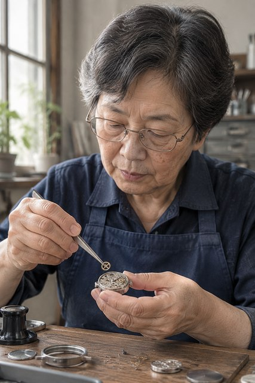
gpt-image-2 t01-r1-A / 18.0 秒 / 判据 5/5 / 1024 × 1536
指令遵循 4/4 画面质量 4/4
逐项判据 通过 单一老年女性、眼镜与工作围裙一人，灰黑短发、细框眼镜与深蓝围裙。 不确定 两只手结构、手指与工具握持合理可见关节和握姿自然，部分手指重叠，无法逐根确认两手各五指。 通过 左手托腕表、右手镊子夹齿轮动作可辨画面左的右手持镊，尖端接触金色齿轮；左手托住取下表带的表壳和机芯。 通过 年龄、皱纹及皮肤纹理可信脸上皱纹、色斑与手背干纹可辨。 通过 窗侧光与自然阴影一致左窗侧光柔和，背光一侧保留阴影。 通过 脸、双手、腕表完整清楚且无多余文字脸、双手和表壳清楚，未见多余文字。 人物、皮肤纹理和工具都清晰，镊尖与齿轮接触处可见。左手托的是拆下表带的腕表表壳。
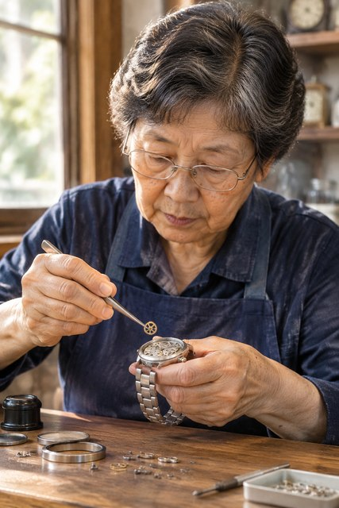
gpt-image-2.5-flare t01-r1-E / 40.7 秒 / 判据 5/5 / 1024 × 1536
指令遵循 4/4 画面质量 4/4
逐项判据 通过 单一老年女性、眼镜与工作围裙一位灰黑短发、细框眼镜、蓝围裙的老年女性。 不确定 两只手结构、手指与工具握持合理关节、指甲和捏持动作可读；指尖部分被表带与其他手指挡住，无法核对两手各五指。 通过 左手托腕表、右手镊子夹齿轮动作可辨画面左的右手夹住金色齿轮，左手托金属腕表。 通过 年龄、皱纹及皮肤纹理可信面颊色斑、眼下皱褶与手背纹理均可见。 通过 窗侧光与自然阴影一致左窗光源方向清楚，桌面和手背高光比其余样本明亮，背光侧仍有自然阴影。 通过 脸、双手、腕表完整清楚且无多余文字脸、手、腕表均清楚；未见多余文字。 偏暖的窗光照在左侧手背和桌面上，金色齿轮与开盖银表在围裙暗部前清楚。
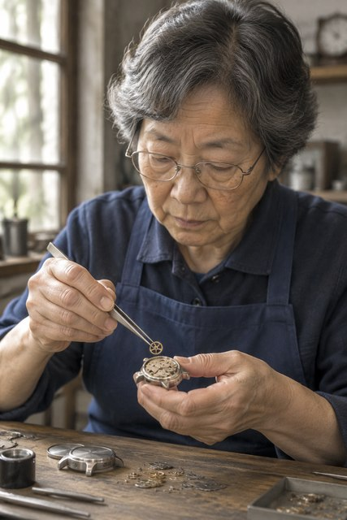
gpt-image-2.5-sunburst t01-r1-D / 32.6 秒 / 判据 5/5 / 1024 × 1536
指令遵循 4/4 画面质量 4/4
逐项判据 通过 单一老年女性、眼镜与工作围裙一人，细金属框、灰黑短发和蓝围裙清楚。 不确定 两只手结构、手指与工具握持合理镊子捏持、左手托握形状可读；交叠指头无法逐根计数。 通过 左手托腕表、右手镊子夹齿轮动作可辨右手持镊接触金色小齿轮，左手托露出机芯的表壳。 通过 年龄、皱纹及皮肤纹理可信眼下与手上褶纹、轻微色斑可见。 通过 窗侧光与自然阴影一致窗在左，柔和亮面与自然阴影相接。 通过 脸、双手、腕表完整清楚且无多余文字脸、双手和表体均在画面内，未见文字。 整体低对比，镊尖和细齿仍可辨。左手托拆去表带的表体，桌面另有拆下的金属表壳。
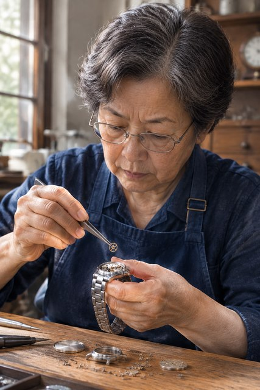
gpt-image-2.6-flare t01-r1-C / 22.0 秒 / 判据 5/5 / 1024 × 1536
指令遵循 4/4 画面质量 4/4
逐项判据 通过 单一老年女性、眼镜与工作围裙单一老年女性、细框眼镜、灰黑短发与深蓝工作围裙。 不确定 两只手结构、手指与工具握持合理右手捏镊和左手托表姿态自然；表带及手指互相遮挡，无法逐根确认双手指头数。 通过 左手托腕表、右手镊子夹齿轮动作可辨右手镊尖与金色齿轮相接，左手托住腕表。 通过 年龄、皱纹及皮肤纹理可信发丝、皱纹、手部皮纹清楚。 通过 窗侧光与自然阴影一致左窗照亮左侧发丝和手背，另一侧较暗。 通过 脸、双手、腕表完整清楚且无多余文字脸、手、腕表和木台零件均清楚；未见文字。 较清晰的三点构图把脸、镊尖和腕表连在一起；木台上的拆开表壳和工具可见。
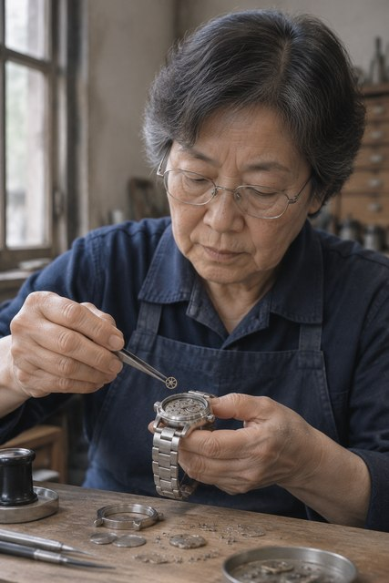
gpt-image-2.6-sunburst t01-r1-B / 56.1 秒 / 判据 5/5 / 1024 × 1536
指令遵循 4/4 画面质量 4/4
逐项判据 通过 单一老年女性、眼镜与工作围裙一位细框眼镜、灰黑短发、深蓝围裙的老年女性。 不确定 两只手结构、手指与工具握持合理表带遮挡左手部分指尖，右手指叠合；可见握持合理，无法确认双手指头总数。 通过 左手托腕表、右手镊子夹齿轮动作可辨右手镊尖夹细齿轮，左手托带金属表带的腕表。 通过 年龄、皱纹及皮肤纹理可信脸部自然皱纹和手指皮肤褶皱清晰。 通过 窗侧光与自然阴影一致左窗给出柔和侧光，眼下及背光侧阴影合理。 通过 脸、双手、腕表完整清楚且无多余文字人物脸、双手、腕表清晰，桌上有表壳与细零件，未见文字。 低饱和光线下，镊尖、齿轮、开盖腕表和垂下的金属表带均可辨。
T02 / 文字生图 / 1024x1024 商业产品：玻璃、金属与反射
纯文生图。产品外观无固定参考，仅评价提示词要求和商业视觉。
五张都能读出标签三行，厚玻璃与金属细节可见；留白、叶片完整性与液位仍要按原要求核对。
查看实际发送的完整提示词 Create one new image from the written description below.
生成一张可用于品牌广告的写实香水产品摄影，正方形构图。主体只有一只透明方形厚底玻璃香水瓶，瓶身内是浅琥珀色液体，液面水平且约为瓶身高度的三分之二。瓶盖是一个居中的拉丝银色金属圆柱，尺寸和连接结构合理。正面有一张平整象牙白纸标签，标签只有三行清晰文字：第一行“MUSEFRAME”，第二行“EAU DE PARFUM”，第三行“50 mL”。香水瓶放在浅灰色石材台面上，镜头为略俯视的三分之四角度，瓶子的正面、右侧面和厚玻璃底都可见。光从左上方的大柔光箱照来，玻璃有真实折射、透射和克制高光，金属盖有拉丝细节；台面有接触阴影和轻微反射，不能像悬浮。背景为深灰渐暗的摄影棚，画面右上方留出约四分之一的干净负空间，但不要在那里写字。瓶旁只放一片完整绿色叶子和一块浅色不规则石头，没有第二个瓶子，没有人物，没有水印。 下载逐字文本 复制提示词 第 1 / 1 轮 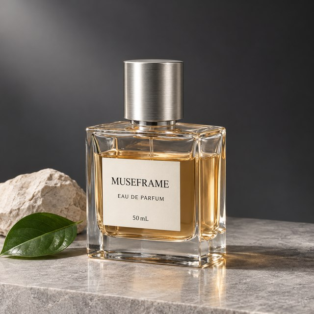
gpt-image-2 t02-r1-A / 21.1 秒 / 判据 4/6 / 1254 × 1254
指令遵循 3/4 画面质量 4/4
逐项判据 通过 单瓶、方形厚玻璃底、圆柱银盖结构正确单一方形厚底玻璃瓶，银盖居中。 未通过 琥珀液体、水平液面约三分之二浅琥珀水平液面可见，按玻璃外轮廓高约四分之三到五分之四，偏高。 通过 三行标签文字准确且可读逐行可读：MUSEFRAME / EAU DE PARFUM / 50 mL。 通过 玻璃折射与金属拉丝可信盖侧有横向拉丝，玻璃弧角折射与厚底清楚。 通过 接触阴影及反射合理、不悬浮瓶底有接触影，台面有玻璃反光。 未通过 一叶一石、右上留白和三分之四视角有一叶一石、正面和右侧及右上留白，叶尖触左边并被裁。 单瓶的标签三行齐全；盖侧拉丝和厚底玻璃的亮暗过渡清楚。液位较高，左侧叶尖未留出完整轮廓。
缺陷：液位偏高；叶尖被左边缘截断
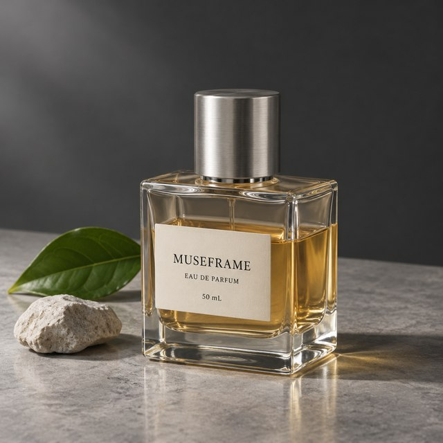
gpt-image-2.5-flare t02-r1-E / 57.4 秒 / 判据 5/6 / 1254 × 1254
指令遵循 3/4 画面质量 4/4
逐项判据 通过 单瓶、方形厚玻璃底、圆柱银盖结构正确单一方形厚底玻璃瓶，居中银色圆柱盖。 通过 琥珀液体、水平液面约三分之二浅琥珀色、水平液面透视可辨，约七成高度。 通过 三行标签文字准确且可读逐行可读：MUSEFRAME / EAU DE PARFUM / 50 mL。 通过 玻璃折射与金属拉丝可信金属盖拉丝、透明泵管和玻璃厚底折射可辨。 通过 接触阴影及反射合理、不悬浮瓶底和石头都落在石台上，玻璃有接触影和台面反光。 未通过 一叶一石、右上留白和三分之四视角一叶一石、右上留白和正右侧瓶面成立；叶片右端被瓶身遮挡。 石头置于前景，瓶后的叶片右端被玻璃瓶挡住。银盖和厚玻璃材质可信，三行标签准确。
缺陷：叶片未全露出
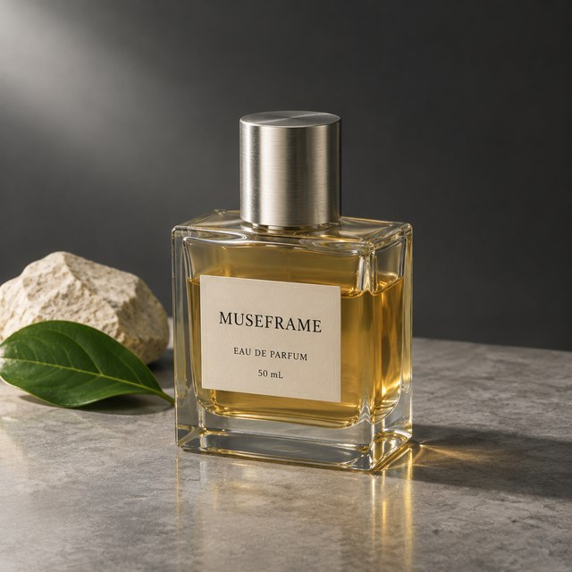
gpt-image-2.5-sunburst t02-r1-D / 16.9 秒 / 判据 5/6 / 1254 × 1254
指令遵循 3/4 画面质量 4/4
逐项判据 通过 单瓶、方形厚玻璃底、圆柱银盖结构正确单一厚底方玻璃瓶、居中圆柱银盖。 通过 琥珀液体、水平液面约三分之二浅琥珀液体的水平面在约七成高度。 通过 三行标签文字准确且可读逐行可读：MUSEFRAME / EAU DE PARFUM / 50 mL。 通过 玻璃折射与金属拉丝可信顶盖有环状纹路，侧盖拉丝与厚玻璃的亮线可辨。 通过 接触阴影及反射合理、不悬浮贴近瓶底的阴影和反光可见，未悬浮。 未通过 一叶一石、右上留白和三分之四视角有一叶一石、右上净空和明显的右侧瓶面，但叶片宽端被裁。 略俯视能看到盖顶的环形金属纹和玻璃瓶肩，标签三行准确。左侧叶片边缘被明显裁去。
缺陷：左侧叶片被裁
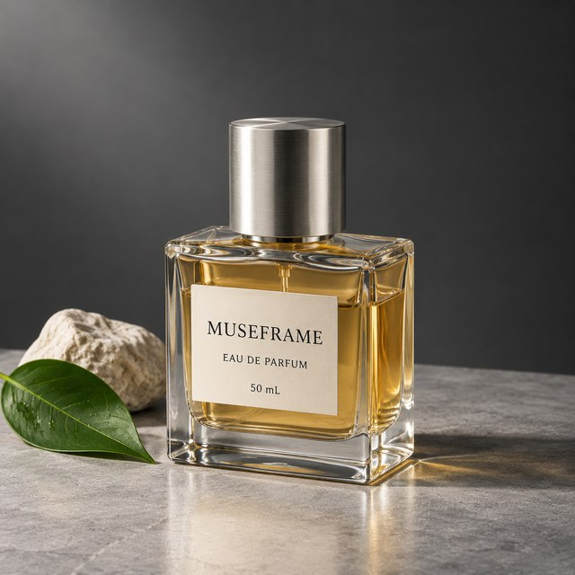
gpt-image-2.6-flare t02-r1-C / 17.1 秒 / 判据 5/6 / 1254 × 1254
指令遵循 3/4 画面质量 4/4
逐项判据 通过 单瓶、方形厚玻璃底、圆柱银盖结构正确一只厚底方瓶，银色圆柱瓶盖位置居中。 通过 琥珀液体、水平液面约三分之二浅琥珀色液面近水平透视，高约七成出头。 通过 三行标签文字准确且可读逐行可读：MUSEFRAME / EAU DE PARFUM / 50 mL。 通过 玻璃折射与金属拉丝可信瓶身折射、瓶底透亮与金属拉丝可辨。 通过 接触阴影及反射合理、不悬浮台面有接触影、金色反光和轻微倒影。 未通过 一叶一石、右上留白和三分之四视角右上留白与三分之四角度成立，有一石一叶，但叶柄伸出左侧。 石台前方有柔和倒影，玻璃侧面形成暖金亮带。三行标签完整，叶柄越过画面左缘。
缺陷：叶柄被裁
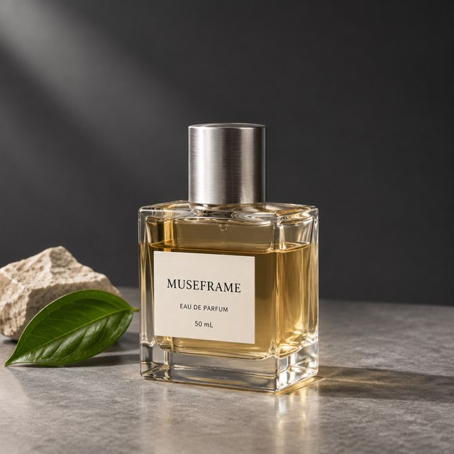
gpt-image-2.6-sunburst t02-r1-B / 19.6 秒 / 判据 5/6 / 1254 × 1254
指令遵循 3/4 画面质量 4/4
逐项判据 通过 单瓶、方形厚玻璃底、圆柱银盖结构正确方形厚玻璃单瓶，居中银色圆柱盖。 未通过 琥珀液体、水平液面约三分之二液面水平可辨，但按外轮廓约四分之三以上。 通过 三行标签文字准确且可读逐行可读：MUSEFRAME / EAU DE PARFUM / 50 mL。 通过 玻璃折射与金属拉丝可信盖侧拉丝清楚，角部和瓶底可见折射。 通过 接触阴影及反射合理、不悬浮接触影与沿台面反光明确，无悬浮。 通过 一叶一石、右上留白和三分之四视角单叶和单石、右上留空，正面与右侧均见；叶片轮廓可辨。 瓶子略小，右上暗色留白宽裕，纸标文字均正确。叶片在左侧完整可辨，液位较要求高。
缺陷：液位偏高
T03 / 文字生图 / 1024x1536 中文海报：准确文字与排版
共3轮，不按最好的一张评价；按原图逐行核对，OCR仅辅助，无法读清记uncertain。
三轮 15 张六行文字均准确，严格版式 0 / 15 通过。首轮底部署名离边缘约 44 到 59 px。
查看实际发送的完整提示词 Create one new image from the written description below.
设计一张精致、可直接发布的中文城市散步活动海报，竖版2:3。采用现代杂志排版，米白底色，墨绿色文字，少量暖橙色点缀，以简洁的街道建筑和银杏叶作为插画，不要人物照片。全部文字必须清晰、完整、准确，不能漏字、错字或添加其他文字。只允许以下六行内容，从上到下排列，保持各行文字不拆散：
把周末还给自己
白石凛的城市散步
11月06日 14:30
集合地点：梧桐路18号
带上相机，慢慢出发。
MUSEFRAME
第一行是画面上部的大标题；第二行是其下方的小一号副标题；第三、第四行组成下半部清楚可读的活动信息；第五行是底部短句；第六行是小号品牌署名。文字与插画互不遮挡，层级鲜明，有整齐的对齐关系和舒适的留白，四边留至少5%的安全边距。不要文字纹理、伪字、二维码、水印或海报边框。 下载逐字文本 复制提示词 第 1 / 3 轮 gpt-image-2 t03-r1-A / 17.3 秒 / 判据 5/6 / 1024 × 1536
指令遵循 3/4 画面质量 4/4
逐项判据 通过 标题“把周末还给自己”准确逐字核对为“把周末还给自己”。 通过 副标题“白石凛的城市散步”准确逐字核对为“白石凛的城市散步”。 通过 日期、数字与时间11月06日 14:30准确逐字核对为“11月06日 14:30”。 通过 集合地点：梧桐路18号准确逐字核对为“集合地点：梧桐路18号”。 通过 短句标点与品牌署名准确，无多余文字短句“带上相机，慢慢出发。”与“MUSEFRAME”完整，无额外可读文字。 未通过 六行层级顺序、行不拆散、留白与安全边距六行顺序正确且不拆行；底部署名距底约48 px，小于竖向5%（约77 px）。 墨绿六行文字与米白底对比清楚，插画将标题与下方活动信息分开。日期与地点下方的橙色分隔线未挡住文字。
缺陷：品牌署名下边距不足5%
gpt-image-2.5-flare t03-r1-E / 26.6 秒 / 判据 5/6 / 1024 × 1536
指令遵循 3/4 画面质量 4/4
逐项判据 通过 标题“把周末还给自己”准确逐字核对为“把周末还给自己”。 通过 副标题“白石凛的城市散步”准确逐字核对为“白石凛的城市散步”。 通过 日期、数字与时间11月06日 14:30准确逐字核对为“11月06日 14:30”。 通过 集合地点：梧桐路18号准确逐字核对为“集合地点：梧桐路18号”。 通过 短句标点与品牌署名准确，无多余文字短句“带上相机，慢慢出发。”与“MUSEFRAME”完整，无额外可读文字。 未通过 六行层级顺序、行不拆散、留白与安全边距六行顺序、层级和分行正确；底部署名距底约59 px，未满竖向5%。 大标题下方的银杏街景与活动日期形成明显分区。短句、标点和品牌署名都清楚。
缺陷：品牌署名下边距不足5%
gpt-image-2.5-sunburst t03-r1-D / 25.0 秒 / 判据 5/6 / 1024 × 1536
指令遵循 3/4 画面质量 4/4
逐项判据 通过 标题“把周末还给自己”准确逐字核对为“把周末还给自己”。 通过 副标题“白石凛的城市散步”准确逐字核对为“白石凛的城市散步”。 通过 日期、数字与时间11月06日 14:30准确逐字核对为“11月06日 14:30”。 通过 集合地点：梧桐路18号准确逐字核对为“集合地点：梧桐路18号”。 通过 短句标点与品牌署名准确，无多余文字短句“带上相机，慢慢出发。”与“MUSEFRAME”完整，无额外可读文字。 未通过 六行层级顺序、行不拆散、留白与安全边距六行顺序正确；日期、地点在上半部，插画在它们下方；底部署名约44 px，未满竖向5%。 六行文字完整，日期和地点被安排到插画上方。最底的短句与署名置于插画地面浅色部分，仍然可读。
缺陷：活动信息未安排在下半部；品牌署名下边距不足5%
gpt-image-2.6-flare t03-r1-C / 18.2 秒 / 判据 5/6 / 1024 × 1536
指令遵循 3/4 画面质量 4/4
逐项判据 通过 标题“把周末还给自己”准确逐字核对为“把周末还给自己”。 通过 副标题“白石凛的城市散步”准确逐字核对为“白石凛的城市散步”。 通过 日期、数字与时间11月06日 14:30准确逐字核对为“11月06日 14:30”。 通过 集合地点：梧桐路18号准确逐字核对为“集合地点：梧桐路18号”。 通过 短句标点与品牌署名准确，无多余文字短句“带上相机，慢慢出发。”与“MUSEFRAME”完整，无额外可读文字。 未通过 六行层级顺序、行不拆散、留白与安全边距六行顺序和分行正确；日期与地点前有图标，署名距底约55 px，未满竖向5%。 日期和地点前分别添加日历、定位图标，文字没有被插画遮住。六行用字与标点完整。
缺陷：品牌署名下边距不足5%
gpt-image-2.6-sunburst t03-r1-B / 25.6 秒 / 判据 5/6 / 1024 × 1536
指令遵循 3/4 画面质量 4/4
逐项判据 通过 标题“把周末还给自己”准确逐字核对为“把周末还给自己”。 通过 副标题“白石凛的城市散步”准确逐字核对为“白石凛的城市散步”。 通过 日期、数字与时间11月06日 14:30准确逐字核对为“11月06日 14:30”。 通过 集合地点：梧桐路18号准确逐字核对为“集合地点：梧桐路18号”。 通过 短句标点与品牌署名准确，无多余文字短句“带上相机，慢慢出发。”与“MUSEFRAME”完整，无额外可读文字。 未通过 六行层级顺序、行不拆散、留白与安全边距六行位置、顺序和层级清楚；底部署名距底约55 px，未满竖向5%。 街道插画在中间，日期和地点居中，短句以细橙线分隔。六行均可直接读清。
缺陷：品牌署名下边距不足5%
第 2 / 3 轮 gpt-image-2 t03-r2-A / 26.2 秒 / 判据 5/6 / 1024 × 1536
指令遵循 3/4 画面质量 4/4
逐项判据 通过 标题“把周末还给自己”准确逐字可读为“把周末还给自己”。 通过 副标题“白石凛的城市散步”准确逐字可读为“白石凛的城市散步”。 通过 日期、数字与时间11月06日 14:30准确数字、月日及冒号可读为“11月06日 14:30”。 通过 集合地点：梧桐路18号准确可读为“集合地点：梧桐路18号”。 通过 短句标点与品牌署名准确，无多余文字短句有逗号与句号，MUSEFRAME拼写正确；未见额外可辨文字。 未通过 六行层级顺序、行不拆散、留白与安全边距六行次序正确且均未换行，但署名底部余量约53px，少于1536px的5%（约77px）。 银杏与右侧建筑占据中部，粗体日期下方分排地点、短句与品牌。 六行文字可逐字核对，署名未达到指定底边安全边距。
缺陷：署名底边安全边距不足5%
gpt-image-2.5-flare t03-r2-E / 52.0 秒 / 判据 5/6 / 1024 × 1536
指令遵循 3/4 画面质量 4/4
逐项判据 通过 标题“把周末还给自己”准确逐字可读为“把周末还给自己”。 通过 副标题“白石凛的城市散步”准确逐字可读为“白石凛的城市散步”。 通过 日期、数字与时间11月06日 14:30准确数字、月日及冒号可读为“11月06日 14:30”。 通过 集合地点：梧桐路18号准确可读为“集合地点：梧桐路18号”。 通过 短句标点与品牌署名准确，无多余文字短句有逗号与句号，MUSEFRAME拼写正确；未见额外可辨文字。 未通过 六行层级顺序、行不拆散、留白与安全边距六行次序正确且均未换行，但署名底部余量约65px，少于1536px的5%（约77px）。 街道纵深清楚，日期和地点集中排版，短句和加字距的品牌署名单独成行。 六行文字可逐字核对，署名未达到指定底边安全边距。
缺陷：署名底边安全边距不足5%
gpt-image-2.5-sunburst t03-r2-D / 47.4 秒 / 判据 5/6 / 1024 × 1536
指令遵循 3/4 画面质量 4/4
逐项判据 通过 标题“把周末还给自己”准确逐字可读为“把周末还给自己”。 通过 副标题“白石凛的城市散步”准确逐字可读为“白石凛的城市散步”。 通过 日期、数字与时间11月06日 14:30准确数字、月日及冒号可读为“11月06日 14:30”。 通过 集合地点：梧桐路18号准确可读为“集合地点：梧桐路18号”。 通过 短句标点与品牌署名准确，无多余文字短句有逗号与句号，MUSEFRAME拼写正确；未见额外可辨文字。 未通过 六行层级顺序、行不拆散、留白与安全边距六行次序正确且均未换行，但署名底部余量约60px，少于1536px的5%（约77px）。 细分隔线和银杏图标划分层级，斜体短句与小号署名分别独立成行。 六行文字可逐字核对，署名未达到指定底边安全边距。
缺陷：署名底边安全边距不足5%
gpt-image-2.6-flare t03-r2-C / 59.8 秒 / 判据 5/6 / 1024 × 1536
指令遵循 3/4 画面质量 4/4
逐项判据 通过 标题“把周末还给自己”准确逐字可读为“把周末还给自己”。 通过 副标题“白石凛的城市散步”准确逐字可读为“白石凛的城市散步”。 通过 日期、数字与时间11月06日 14:30准确数字、月日及冒号可读为“11月06日 14:30”。 通过 集合地点：梧桐路18号准确可读为“集合地点：梧桐路18号”。 通过 短句标点与品牌署名准确，无多余文字短句有逗号与句号，MUSEFRAME拼写正确；未见额外可辨文字。 未通过 六行层级顺序、行不拆散、留白与安全边距六行次序正确且均未换行，但署名底部余量约35px，少于1536px的5%（约77px）。 中段是建筑、路灯与成枝银杏，底部文字区干净；品牌紧贴底部安全区。 六行文字可逐字核对，署名未达到指定底边安全边距。
缺陷：署名底边安全边距不足5%
gpt-image-2.6-sunburst t03-r2-B / 18.4 秒 / 判据 5/6 / 1024 × 1536
指令遵循 3/4 画面质量 4/4
逐项判据 通过 标题“把周末还给自己”准确逐字可读为“把周末还给自己”。 通过 副标题“白石凛的城市散步”准确逐字可读为“白石凛的城市散步”。 通过 日期、数字与时间11月06日 14:30准确数字、月日及冒号可读为“11月06日 14:30”。 通过 集合地点：梧桐路18号准确可读为“集合地点：梧桐路18号”。 通过 短句标点与品牌署名准确，无多余文字短句有逗号与句号，MUSEFRAME拼写正确；未见额外可辨文字。 未通过 六行层级顺序、行不拆散、留白与安全边距六行次序正确且均未换行，但署名底部余量约51px，少于1536px的5%（约77px）。 弧形橙色划线分隔题头，短句用手写体，品牌单列在下方。 六行文字可逐字核对，署名未达到指定底边安全边距。
缺陷：署名底边安全边距不足5%
第 3 / 3 轮 gpt-image-2 t03-r3-A / 36.9 秒 / 判据 5/6 / 1024 × 1536
指令遵循 3/4 画面质量 4/4
逐项判据 通过 标题“把周末还给自己”准确逐字可读为“把周末还给自己”。 通过 副标题“白石凛的城市散步”准确逐字可读为“白石凛的城市散步”。 通过 日期、数字与时间11月06日 14:30准确数字、月日及冒号可读为“11月06日 14:30”。 通过 集合地点：梧桐路18号准确可读为“集合地点：梧桐路18号”。 通过 短句标点与品牌署名准确，无多余文字短句有逗号与句号，MUSEFRAME拼写正确；未见额外可辨文字。 未通过 六行层级顺序、行不拆散、留白与安全边距六行次序正确且均未换行，但署名底部余量约52px，少于1536px的5%（约77px）。 中段以右侧建筑和左侧银杏分隔留白，底部手写短句与两侧横线夹出的署名清楚。 六行文字可逐字核对，署名未达到指定底边安全边距。
缺陷：署名底边安全边距不足5%
gpt-image-2.5-flare t03-r3-E / 30.6 秒 / 判据 5/6 / 1024 × 1536
指令遵循 3/4 画面质量 4/4
逐项判据 通过 标题“把周末还给自己”准确逐字可读为“把周末还给自己”。 通过 副标题“白石凛的城市散步”准确逐字可读为“白石凛的城市散步”。 通过 日期、数字与时间11月06日 14:30准确数字、月日及冒号可读为“11月06日 14:30”。 通过 集合地点：梧桐路18号准确可读为“集合地点：梧桐路18号”。 通过 短句标点与品牌署名准确，无多余文字短句有逗号与句号，MUSEFRAME拼写正确；未见额外可辨文字。 未通过 六行层级顺序、行不拆散、留白与安全边距六行次序正确且均未换行，但署名底部余量约50px，少于1536px的5%（约77px）。 插画由街道消失点向两侧展开，日期、地点和短句分别成行，署名使用较疏字距。 六行文字可逐字核对，署名未达到指定底边安全边距。
缺陷：署名底边安全边距不足5%
gpt-image-2.5-sunburst t03-r3-D / 39.3 秒 / 判据 5/6 / 1024 × 1536
指令遵循 3/4 画面质量 4/4
逐项判据 通过 标题“把周末还给自己”准确逐字可读为“把周末还给自己”。 通过 副标题“白石凛的城市散步”准确逐字可读为“白石凛的城市散步”。 通过 日期、数字与时间11月06日 14:30准确数字、月日及冒号可读为“11月06日 14:30”。 通过 集合地点：梧桐路18号准确可读为“集合地点：梧桐路18号”。 通过 短句标点与品牌署名准确，无多余文字短句有逗号与句号，MUSEFRAME拼写正确；未见额外可辨文字。 未通过 六行层级顺序、行不拆散、留白与安全边距六行次序正确且均未换行，但署名底部余量约43px，少于1536px的5%（约77px）。 街树与透视建筑铺开在中部，四行下半部文字互不重叠，署名紧邻底部安全区。 六行文字可逐字核对，署名未达到指定底边安全边距。
缺陷：署名底边安全边距不足5%
gpt-image-2.6-flare t03-r3-C / 54.9 秒 / 判据 5/6 / 1024 × 1536
指令遵循 3/4 画面质量 3/4
逐项判据 通过 标题“把周末还给自己”准确逐字可读为“把周末还给自己”。 通过 副标题“白石凛的城市散步”准确逐字可读为“白石凛的城市散步”。 通过 日期、数字与时间11月06日 14:30准确数字、月日及冒号可读为“11月06日 14:30”。 通过 集合地点：梧桐路18号准确可读为“集合地点：梧桐路18号”。 通过 短句标点与品牌署名准确，无多余文字短句有逗号与句号，MUSEFRAME拼写正确；未见额外可辨文字。 未通过 六行层级顺序、行不拆散、留白与安全边距六行次序正确且均未换行，但署名底部余量约56px，少于1536px的5%（约77px）。 标题字仍可辨为“末”，但左下撇内部有一块明显浅色渐变；下方活动文字清楚。 六行文字可逐字核对，署名未达到指定底边安全边距。
缺陷：标题“末”左下笔画有局部褪色；署名底边安全边距不足5%
gpt-image-2.6-sunburst t03-r3-B / 38.9 秒 / 判据 5/6 / 1024 × 1536
指令遵循 3/4 画面质量 4/4
逐项判据 通过 标题“把周末还给自己”准确逐字可读为“把周末还给自己”。 通过 副标题“白石凛的城市散步”准确逐字可读为“白石凛的城市散步”。 通过 日期、数字与时间11月06日 14:30准确数字、月日及冒号可读为“11月06日 14:30”。 通过 集合地点：梧桐路18号准确可读为“集合地点：梧桐路18号”。 通过 短句标点与品牌署名准确，无多余文字短句有逗号与句号，MUSEFRAME拼写正确；未见额外可辨文字。 未通过 六行层级顺序、行不拆散、留白与安全边距六行次序正确且均未换行，但署名底部余量约54px，少于1536px的5%（约77px）。 横线分开标题和插画，底部四行信息清晰，字号层级明确。 六行文字可逐字核对，署名未达到指定底边安全边距。
缺陷：署名底边安全边距不足5%
T04 / 文字生图 / 1536x1024 数量与空间：多约束静物
按实体计数，反射不当成额外物体；折射与构图要求分别核对。
五张均完成主要数量与茶匙方向；柠檬或蓝杯有局部遮挡，水面相对杯内腔中点目测偏高。
查看实际发送的完整提示词 Create one new image from the written description below.
生成一张写实静物摄影，横版3:2，略俯视一张浅色木桌。必须严格满足数量和位置：画面左侧恰好有三个完整的黄色柠檬，互不重叠并排成一个小三角；画面右侧恰好有两个蓝色陶瓷马克杯，一前一后，每只杯子只有一个杯柄，两个杯柄都朝画面右侧。画面中央前方只有一个透明圆柱玻璃杯，里面是半杯清水，杯中插着一根红色直吸管；吸管必须在水面处呈现符合折射的视觉偏移，但它仍是一根吸管。玻璃杯前方横放一把银色茶匙，茶匙柄朝画面左侧、匙头朝右侧。柠檬、蓝杯、玻璃杯和茶匙都不互相遮挡，各自完整可辨。阳光从画面左上方照来，所有物体阴影方向一致，清水、陶瓷和金属的材质可信。背景是干净的浅灰墙面，没有镜子。不要其他水果、杯子、餐具、桌布、人物、文字、标志、水印或拼图。 下载逐字文本 复制提示词 第 1 / 1 轮 gpt-image-2 t04-r1-A / 18.8 秒 / 判据 4/6 / 1536 × 1024
指令遵循 3/4 画面质量 4/4
逐项判据 未通过 恰好3个完整黄柠檬，位于左侧且小三角排列左侧确为3个黄色柠檬、成三角，但最前柠檬遮住左侧柠檬一角。 通过 恰好2个蓝杯在右侧，一前一后右侧2个蓝陶瓷杯，一前一后；前杯遮住后杯部分。 通过 每杯1个杯柄且均朝画面右侧两杯各见1个朝右杯柄，后柄下缘被前杯挡住。 未通过 中央前方单一半水玻璃杯与1根红吸管中央前方为单一圆柱玻璃杯和一根吸管。水线约六成；红吸管水线上下有清楚偏移。 通过 前方单一横向银茶匙，柄左头右唯一银茶匙横放在玻璃杯前，柄朝左、匙头朝右。 通过 吸管折射、材质与统一阴影合理水面处可见单吸管折射偏移，蓝釉和匙面反光可信，阴影方向基本一致。 全部物体数量和茶匙方向正确，柠檬和杯子有局部遮挡。匙面和玻璃焦散明亮，杯影均向右后展开。
缺陷：柠檬之间有遮挡；前蓝杯部分遮挡后蓝杯；水量高于半杯
gpt-image-2.5-flare t04-r1-E / 30.2 秒 / 判据 4/6 / 1536 × 1024
指令遵循 3/4 画面质量 4/4
逐项判据 未通过 恰好3个完整黄柠檬，位于左侧且小三角排列左侧确为3个黄色柠檬、成三角，但前柠檬遮住两个后方柠檬的局部轮廓。 通过 恰好2个蓝杯在右侧，一前一后右侧2个蓝陶瓷杯，一前一后；前杯遮住后杯部分。 通过 每杯1个杯柄且均朝画面右侧两杯各见1个朝右杯柄，后柄下缘被前杯挡住。 未通过 中央前方单一半水玻璃杯与1根红吸管中央前方为单一圆柱玻璃杯和一根吸管。水线约六成至三分之二；红吸管在水面出现偏移。 通过 前方单一横向银茶匙，柄左头右唯一银茶匙横放在玻璃杯前，柄朝左、匙头朝右。 通过 吸管折射、材质与统一阴影合理水面处可见单吸管折射偏移，蓝釉和匙面反光可信，阴影方向基本一致。 全部物体数量和茶匙方向正确，柠檬和杯子有局部遮挡。长玻璃阴影中能看到焦散，后蓝杯部分被前杯遮挡。
缺陷：柠檬之间有遮挡；前蓝杯部分遮挡后蓝杯；水量高于半杯
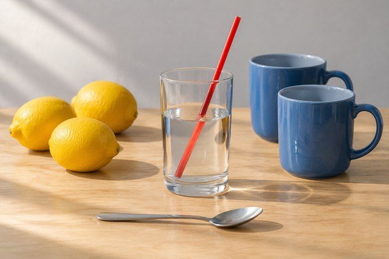
gpt-image-2.5-sunburst t04-r1-D / 50.2 秒 / 判据 4/6 / 1536 × 1024
指令遵循 3/4 画面质量 4/4
逐项判据 未通过 恰好3个完整黄柠檬，位于左侧且小三角排列左侧确为3个黄色柠檬、成三角，但前柠檬遮住后方两只的部分轮廓。 通过 恰好2个蓝杯在右侧，一前一后右侧2个蓝陶瓷杯，一前一后；前杯遮住后杯部分。 通过 每杯1个杯柄且均朝画面右侧两杯各见1个朝右杯柄，后柄下缘被前杯挡住。 未通过 中央前方单一半水玻璃杯与1根红吸管中央前方为单一圆柱玻璃杯和一根吸管。玻璃水位约六成至三分之二；折射令吸管水下段偏移、色浅。 通过 前方单一横向银茶匙，柄左头右唯一银茶匙横放在玻璃杯前，柄朝左、匙头朝右。 通过 吸管折射、材质与统一阴影合理水面处可见单吸管折射偏移，蓝釉和匙面反光可信，阴影方向基本一致。 全部物体数量和茶匙方向正确，柠檬和杯子有局部遮挡。蓝杯和茶匙的阴影方向一致，未见多余物品。
缺陷：柠檬之间有遮挡；前蓝杯部分遮挡后蓝杯；水量高于半杯
gpt-image-2.6-flare t04-r1-C / 18.4 秒 / 判据 4/6 / 1536 × 1024
指令遵循 3/4 画面质量 4/4
逐项判据 未通过 恰好3个完整黄柠檬，位于左侧且小三角排列左侧确为3个黄色柠檬、成三角，但前方柠檬压住左后方轮廓，两个后方柠檬也很近。 通过 恰好2个蓝杯在右侧，一前一后右侧2个蓝陶瓷杯，一前一后；前杯遮住后杯部分。 通过 每杯1个杯柄且均朝画面右侧两杯各见1个朝右杯柄，后柄下缘被前杯挡住。 未通过 中央前方单一半水玻璃杯与1根红吸管中央前方为单一圆柱玻璃杯和一根吸管。水线约六成至三分之二；折射让杯中部分向左偏。 通过 前方单一横向银茶匙，柄左头右唯一银茶匙横放在玻璃杯前，柄朝左、匙头朝右。 通过 吸管折射、材质与统一阴影合理水面处可见单吸管折射偏移，蓝釉和匙面反光可信，阴影方向基本一致。 全部物体数量和茶匙方向正确，柠檬和杯子有局部遮挡。蓝杯白色内釉清楚，右前方茶匙略斜仍可辨。
缺陷：柠檬之间有遮挡；前蓝杯部分遮挡后蓝杯；水量高于半杯
gpt-image-2.6-sunburst t04-r1-B / 24.4 秒 / 判据 4/6 / 1536 × 1024
指令遵循 3/4 画面质量 4/4
逐项判据 未通过 恰好3个完整黄柠檬，位于左侧且小三角排列左侧确为3个黄色柠檬、成三角，但左前柠檬及靠右柠檬遮住后柠檬的下缘。 通过 恰好2个蓝杯在右侧，一前一后右侧2个蓝陶瓷杯，一前一后；前杯遮住后杯部分。 通过 每杯1个杯柄且均朝画面右侧两杯各见1个朝右杯柄，后柄下缘被前杯挡住。 未通过 中央前方单一半水玻璃杯与1根红吸管中央前方为单一圆柱玻璃杯和一根吸管。水线约六成至三分之二；红吸管只有一根，水面处轮廓偏移。 通过 前方单一横向银茶匙，柄左头右唯一银茶匙横放在玻璃杯前，柄朝左、匙头朝右。 通过 吸管折射、材质与统一阴影合理水面处可见单吸管折射偏移，蓝釉和匙面反光可信，阴影方向基本一致。 全部物体数量和茶匙方向正确，柠檬和杯子有局部遮挡。略高水位和靠拢的柠檬构成主要偏差。
缺陷：柠檬之间有遮挡；前蓝杯部分遮挡后蓝杯；水量高于半杯
T05 / 参考图编辑 / 1024x1536 白石凛：换装、换姿态、换环境
身份一致性是主观视觉判断，不是身份识别或生物识别测量。共3轮。
三轮 15 张均通过视觉身份判据；姿态和左右手分工同时通过为 0 / 15。下页放大脸部与两例持伞。
查看实际发送的完整提示词 两张参考图都是同一位25岁成年虚拟女性白石凛：第一张是全身参考，第二张是面部近景。请把她改编成一张写实的夜间时尚街拍。必须保持同一人物的面部骨相、眼形、鼻形、唇形、嘴角旁小痣的位置、肤色，以及深栗色齐肩头发和轻薄刘海；不能换成另一张漂亮但不同的脸，不要磨皮。
把服装改为深海军蓝宽松西装外套、纯白圆领T恤和黑色直筒长裤，不保留原绿色风衣和米白长裙。她坐在雨后东京街边公交站的长椅上，身体向画面左侧转约45度，脸回转看向镜头，神情平静，人物自己的左手握着一把打开的透明雨伞，右手自然放在膝盖上。画面从头顶拍到膝盖以下，伞顶可以超出画面，但脸、双手、膝盖都完整可见。背景有适度虚化的蓝色和暖橙色城市灯光，地面潮湿，光线真实地影响面部和衣服。身体、手指、伞柄和伞骨结构合理。只出现白石凛一人，不增加可读文字、水印或拼图。 下载逐字文本 复制提示词 第 1 / 3 轮 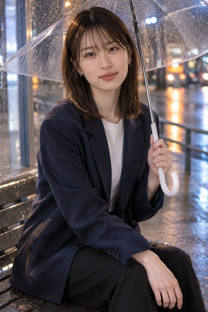
gpt-image-2 t05-r1-A / 156.8 秒 / 判据 5/6 / 1024 × 1536
指令遵循 3/4 画面质量 4/4 保留表现 4/4
逐项判据 通过 脸型五官与嘴角小痣符合白石凛参考眼鼻唇、下颌与参考近，画面左侧嘴角下小痣清楚。 通过 深栗齐肩发、轻薄刘海与自然肤质保留深栗齐肩发、透薄刘海，双颊留少量皮肤纹理。 通过 蓝西装+白T+黑长裤，替换旧衣深海军蓝宽松西装、白圆领T恤、黑裤，旧衣未保留。 未通过 长椅坐姿、身体转左约45度、回看镜头长椅坐姿并回望镜头，躯干与双膝主要朝画面右侧。 通过 左手透明伞、右手膝上且结构合理左手握透明伞，右手搭在膝盖上；握柄、伞骨和可见手指结构可信。 通过 雨后公交站夜景、协调灯光，单人无文字玻璃站亭、湿地和蓝橙色街灯都可辨；单人，无可读字。 脸部与参考接近，左手持伞，右手搭膝。身体主要朝画面右侧，和指定的画面左侧相反。
缺陷：身体转向画面右侧
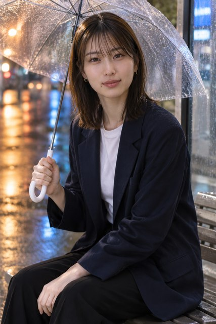
gpt-image-2.5-flare t05-r1-E / 25.0 秒 / 判据 5/6 / 1024 × 1536
指令遵循 3/4 画面质量 4/4 保留表现 4/4
逐项判据 通过 脸型五官与嘴角小痣符合白石凛参考脸型、眼鼻与嘴角小痣和参考一致，正面眼神平静。 通过 深栗齐肩发、轻薄刘海与自然肤质保留深栗齐肩，薄刘海和微小皮肤纹理清楚。 通过 蓝西装+白T+黑长裤，替换旧衣深海军蓝宽松西装、白圆领T恤、黑裤，旧衣未保留。 通过 长椅坐姿、身体转左约45度、回看镜头长椅坐姿，双膝与身体向画面左斜，脸回看镜头。 未通过 左手透明伞、右手膝上且结构合理实际为人物右手握透明伞，左手搭在膝上；手指及伞结构本身合理。 通过 雨后公交站夜景、协调灯光，单人无文字玻璃站亭、湿地和蓝橙色街灯都可辨；单人，无可读字。 身体按要求转向画面左，右手却握住了伞，左手搭膝。衣服与雨夜站亭光线融合自然。
缺陷：持伞和搭膝的左右手互换
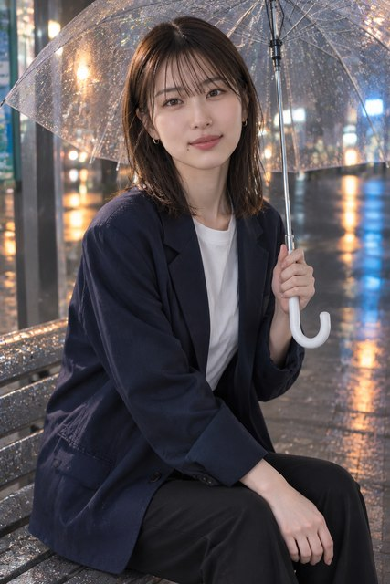
gpt-image-2.5-sunburst t05-r1-D / 33.3 秒 / 判据 5/6 / 1024 × 1536
指令遵循 3/4 画面质量 4/4 保留表现 4/4
逐项判据 通过 脸型五官与嘴角小痣符合白石凛参考眼鼻、嘴唇轮廓和嘴角痣位置与参考相近。 通过 深栗齐肩发、轻薄刘海与自然肤质保留齐肩栗发、轻薄刘海与皮肤细节清楚。 通过 蓝西装+白T+黑长裤，替换旧衣深海军蓝宽松西装、白圆领T恤、黑裤，旧衣未保留。 未通过 长椅坐姿、身体转左约45度、回看镜头长椅坐姿回看镜头；两膝和躯干主要转向画面右侧。 通过 左手透明伞、右手膝上且结构合理左手握伞，右手放在膝前；白弯柄、银杆与透明伞骨连续。 通过 雨后公交站夜景、协调灯光，单人无文字玻璃站亭、湿地和蓝橙色街灯都可辨；单人，无可读字。 左右手分工正确，雨伞和湿地反光连贯，双膝可辨。躯干实际转向画面右侧。
缺陷：身体转向画面右侧
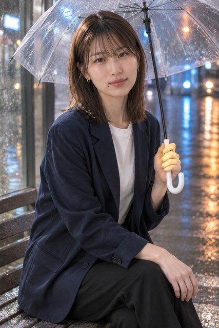
gpt-image-2.6-flare t05-r1-C / 33.3 秒 / 判据 4/6 / 1024 × 1536
指令遵循 3/4 画面质量 3/4 保留表现 4/4
逐项判据 通过 脸型五官与嘴角小痣符合白石凛参考眼、鼻、嘴及画面左嘴角下的小痣都与参考接近。 通过 深栗齐肩发、轻薄刘海与自然肤质保留齐肩栗色发、轻薄刘海与皮肤纹理可见。 通过 蓝西装+白T+黑长裤，替换旧衣深海军蓝宽松西装、白圆领T恤、黑裤，旧衣未保留。 未通过 长椅坐姿、身体转左约45度、回看镜头人在站亭长椅坐着并回看，躯干、叠放的膝向画面右侧。 通过 左手透明伞、右手膝上且结构合理左手握透明伞，右手放膝上；工具与手指边缘可分。 未通过 雨后公交站夜景、协调灯光，单人无文字单人雨夜站亭、湿地和蓝橙灯，无可读字；持伞指头局部黄亮得突兀。 服装和身份特征清楚，人物主要朝画面右侧，腿部重叠。持伞手的几根指头出现较突兀的饱和黄色高光。
缺陷：身体转向画面右侧；两膝局部遮挡；持伞手局部偏黄
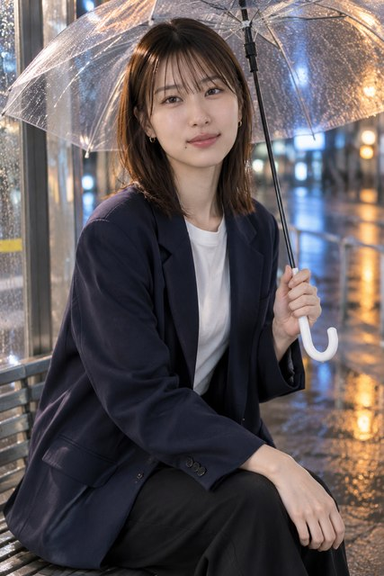
gpt-image-2.6-sunburst t05-r1-B / 31.7 秒 / 判据 5/6 / 1024 × 1536
指令遵循 3/4 画面质量 4/4 保留表现 4/4
逐项判据 通过 脸型五官与嘴角小痣符合白石凛参考细长眼形、鼻与嘴唇轮廓与参考接近，嘴角小痣位置对应。 通过 深栗齐肩发、轻薄刘海与自然肤质保留深栗齐肩、薄刘海和自然皮肤过渡可见。 通过 蓝西装+白T+黑长裤，替换旧衣深海军蓝宽松西装、白圆领T恤、黑裤，旧衣未保留。 未通过 长椅坐姿、身体转左约45度、回看镜头坐在长椅回看镜头，但躯干向画面右，两膝在透视中重叠。 通过 左手透明伞、右手膝上且结构合理左手握白钩柄，右手搭膝；两手和透明伞可辨。 通过 雨后公交站夜景、协调灯光，单人无文字玻璃站亭、湿地和蓝橙色街灯都可辨；单人，无可读字。 衣着、湿地夜景与指定的持伞手均符合。身体转向画面右侧，两膝在该角度下互相遮挡。
缺陷：身体转向画面右侧；两膝局部遮挡
第 2 / 3 轮 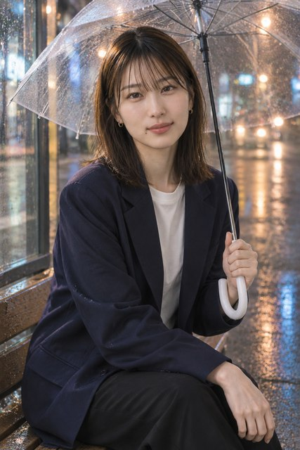
gpt-image-2 t05-r2-A / 68.8 秒 / 判据 5/6 / 1024 × 1536
指令遵循 3/4 画面质量 4/4 保留表现 4/4
逐项判据 通过 脸型五官与嘴角小痣符合白石凛参考眼鼻唇、脸型和画面左嘴角下小痣与参考近。 通过 深栗齐肩发、轻薄刘海与自然肤质保留齐肩栗发、薄刘海和少量脸部肌理可见。 通过 蓝西装+白T+黑长裤，替换旧衣海军蓝宽西装、纯白圆领T和黑色长裤齐全。 未通过 长椅坐姿、身体转左约45度、回看镜头玻璃亭长椅上坐着回望，双腿与躯干仍偏向画面右。 通过 左手透明伞、右手膝上且结构合理左手握透明伞，右手搭在膝部；可见手指和伞的主体结构可信。 通过 雨后公交站夜景、协调灯光，单人无文字一人，玻璃亭、湿地与蓝橙灯反光相容，未见可读文字。 脸与持伞手位置清楚；近膝占据下方，坐姿朝画面右。伞上水滴和湿地反光自然。
缺陷：身体转向画面右侧
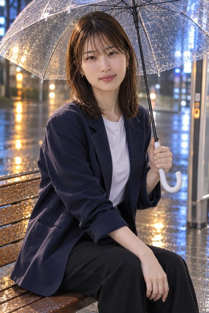
gpt-image-2.5-flare t05-r2-E / 28.1 秒 / 判据 5/6 / 1024 × 1536
指令遵循 3/4 画面质量 4/4 保留表现 4/4
逐项判据 通过 脸型五官与嘴角小痣符合白石凛参考眼鼻唇、嘴角下小痣和骨相接近参考。 通过 深栗齐肩发、轻薄刘海与自然肤质保留深栗齐肩发、轻薄刘海及面部细纹可辨。 通过 蓝西装+白T+黑长裤，替换旧衣海军蓝宽西装、纯白圆领T和黑色长裤齐全。 未通过 长椅坐姿、身体转左约45度、回看镜头长椅上侧坐回看，躯干和双膝斜向画面右。 通过 左手透明伞、右手膝上且结构合理左手握透明伞，右手搭在膝部；可见手指和伞的主体结构可信。 通过 雨后公交站夜景、协调灯光，单人无文字单人雨夜站亭，地面蓝橙反光，与伞、发丝边光相容；无可读文字。 腿部和两手均可辨，持伞手符合要求。身体仍偏向画面右；面部和雨滴亮面与现场暖光相容。
缺陷：身体转向画面右侧
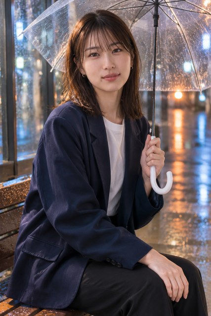
gpt-image-2.5-sunburst t05-r2-D / 36.0 秒 / 判据 5/6 / 1024 × 1536
指令遵循 3/4 画面质量 4/4 保留表现 4/4
逐项判据 通过 脸型五官与嘴角小痣符合白石凛参考眼形、鼻唇和画面左嘴角下小痣均对应参考。 通过 深栗齐肩发、轻薄刘海与自然肤质保留栗色齐肩、薄刘海和皮肤纹理可辨。 通过 蓝西装+白T+黑长裤，替换旧衣海军蓝宽西装、纯白圆领T和黑色长裤齐全。 未通过 长椅坐姿、身体转左约45度、回看镜头长椅坐姿回看镜头，身体及腿斜朝画面右。 通过 左手透明伞、右手膝上且结构合理左手握透明伞，右手搭在膝部；可见手指和伞的主体结构可信。 通过 雨后公交站夜景、协调灯光，单人无文字单人坐在有玻璃与木椅的雨夜站亭，冷暖反光均可见，无可读字。 伞杆、透明伞面和手部接触合理，右手搭膝。身体主要向画面右侧，木椅和伞面雨水清楚。
缺陷：身体转向画面右侧
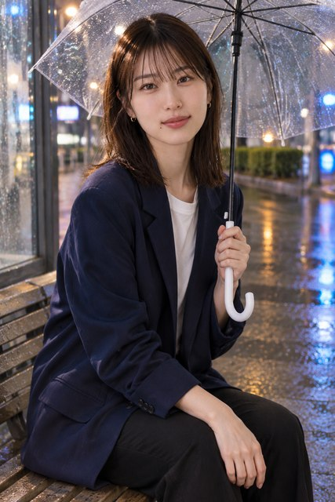
gpt-image-2.6-flare t05-r2-C / 76.6 秒 / 判据 5/6 / 1024 × 1536
指令遵循 3/4 画面质量 4/4 保留表现 4/4
逐项判据 通过 脸型五官与嘴角小痣符合白石凛参考五官比例、嘴角痣和参考相近。 通过 深栗齐肩发、轻薄刘海与自然肤质保留薄刘海、齐肩栗发和真实肤质均在。 通过 蓝西装+白T+黑长裤，替换旧衣海军蓝宽西装、纯白圆领T和黑色长裤齐全。 未通过 长椅坐姿、身体转左约45度、回看镜头坐长椅向右，脸回看；两膝朝右侧。 通过 左手透明伞、右手膝上且结构合理左手握透明伞，右手搭在膝部；可见手指和伞的主体结构可信。 通过 雨后公交站夜景、协调灯光，单人无文字雨后公交亭氛围，单人、远处蓝橙灯均虚化且无可读文字。 两膝和左右手分工可见，人物和服装细节接近要求。身体转向画面右侧，背景的灯光和湿地反射连贯。
缺陷：身体转向画面右侧
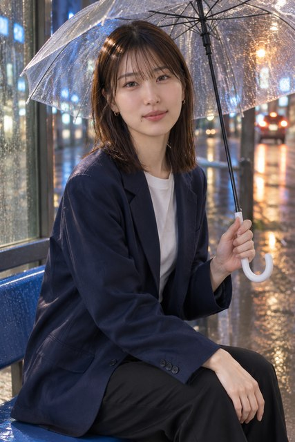
gpt-image-2.6-sunburst t05-r2-B / 63.2 秒 / 判据 5/6 / 1024 × 1536
指令遵循 3/4 画面质量 4/4 保留表现 4/4
逐项判据 通过 脸型五官与嘴角小痣符合白石凛参考画面左嘴角下小痣和参考位置对应，眼鼻轮廓近。 通过 深栗齐肩发、轻薄刘海与自然肤质保留深栗色齐肩发与薄刘海保留，面部保有细小纹理。 通过 蓝西装+白T+黑长裤，替换旧衣海军蓝宽西装、纯白圆领T和黑色长裤齐全。 未通过 长椅坐姿、身体转左约45度、回看镜头坐蓝色长椅，脸望镜头；躯干及膝都转向画面右。 通过 左手透明伞、右手膝上且结构合理左手握透明伞，右手搭在膝部；可见手指和伞的主体结构可信。 通过 雨后公交站夜景、协调灯光，单人无文字单人，湿玻璃和道路有蓝橙车灯反光，无可读文字。 蓝长椅、玻璃站亭和雨后车灯构成完整夜景。左手持伞、右手搭膝，但身体向画面右转。
缺陷：身体转向画面右侧
第 3 / 3 轮 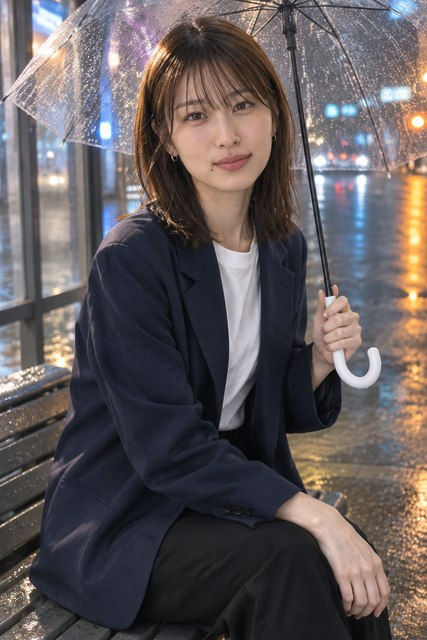
gpt-image-2 t05-r3-A / 45.9 秒 / 判据 4/6 / 1024 × 1536
指令遵循 3/4 画面质量 3/4 保留表现 4/4
逐项判据 通过 脸型五官与嘴角小痣符合白石凛参考脸型与眼鼻唇接近参考，画面左侧嘴角小痣可辨。 通过 深栗齐肩发、轻薄刘海与自然肤质保留齐肩深栗发、薄刘海，肤质保留。 通过 蓝西装+白T+黑长裤，替换旧衣深海军蓝宽西装、白色圆领T恤、黑长裤均在。 未通过 长椅坐姿、身体转左约45度、回看镜头长椅坐姿回看镜头，躯干、膝部朝画面右。 未通过 左手透明伞、右手膝上且结构合理左手持伞、右手搭膝；放大后，拇指和四根握柄指以外，伞杆另一侧还突出一段异常的指形。 通过 雨后公交站夜景、协调灯光，单人无文字站亭、夜雨与冷暖灯反光可见，未见其他人物或可读文字。 脸部、衣着和站亭夜景很接近任务；身体转向画面右侧。持伞手在黑伞杆背面多出突兀的指状部分。
缺陷：身体转向画面右侧；持伞手有多余指状突起
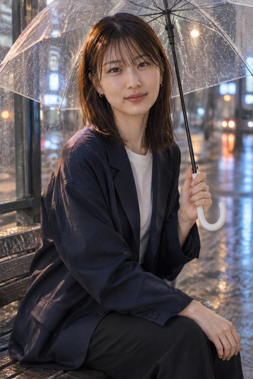
gpt-image-2.5-flare t05-r3-E / 35.3 秒 / 判据 4/5 / 1024 × 1536
指令遵循 3/4 画面质量 4/4 保留表现 4/4
逐项判据 通过 脸型五官与嘴角小痣符合白石凛参考脸型、眼鼻唇和左画面嘴角下小痣接近参考。 通过 深栗齐肩发、轻薄刘海与自然肤质保留保留齐肩栗色直发、轻薄刘海和自然肤质。 通过 蓝西装+白T+黑长裤，替换旧衣深海军蓝宽西装、白色圆领T恤、黑长裤均在。 未通过 长椅坐姿、身体转左约45度、回看镜头坐在玻璃亭长椅上回望，身体和膝部朝画面右。 通过 左手透明伞、右手膝上且结构合理左手握透明伞，右手搭膝，手与伞结构大体自然。 不确定 雨后公交站夜景、协调灯光，单人无文字雨夜玻璃亭和蓝橙反光成立；背景有深色模糊竖影，不能确认是人影还是街道物体；未见可读字。 夜景照亮发丝和西装，左手持伞与右手搭膝均清楚。身体偏向画面右，伞杆右后的模糊暗影无法确定内容。
缺陷：身体转向画面右侧
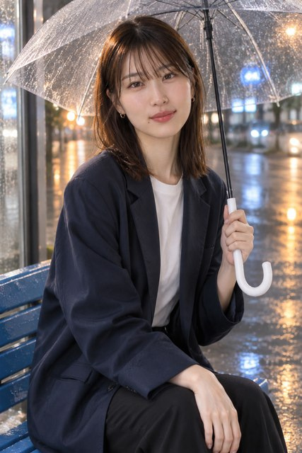
gpt-image-2.5-sunburst t05-r3-D / 30.3 秒 / 判据 4/6 / 1024 × 1536
指令遵循 3/4 画面质量 3/4 保留表现 4/4
逐项判据 通过 脸型五官与嘴角小痣符合白石凛参考眼形、唇形、鼻型和嘴角小痣都与参考接近。 通过 深栗齐肩发、轻薄刘海与自然肤质保留深栗发落在肩部，薄刘海，脸部有少量肌理。 通过 蓝西装+白T+黑长裤，替换旧衣深海军蓝宽西装、白色圆领T恤、黑长裤均在。 未通过 长椅坐姿、身体转左约45度、回看镜头长椅回望镜头；躯干和膝向画面右。 未通过 左手透明伞、右手膝上且结构合理左手持透明伞、右手搭膝正确；底边裁到右手数个指尖。 通过 雨后公交站夜景、协调灯光，单人无文字玻璃亭、单人、湿地和蓝橙灯成立，未见可读文字。 亮面透明伞和背景湿地相容，身体向画面右。画幅过紧，搭膝手指尖未完整入画。
缺陷：身体转向画面右侧；搭膝手指尖出框
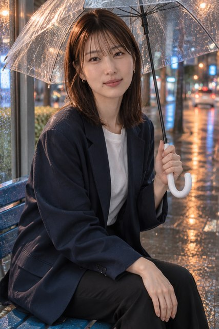
gpt-image-2.6-flare t05-r3-C / 66.0 秒 / 判据 5/6 / 1024 × 1536
指令遵循 3/4 画面质量 4/4 保留表现 4/4
逐项判据 通过 脸型五官与嘴角小痣符合白石凛参考嘴角下小痣和眼鼻唇轮廓与参考一致度高。 通过 深栗齐肩发、轻薄刘海与自然肤质保留栗色齐肩，薄刘海和双颊肤质清楚。 通过 蓝西装+白T+黑长裤，替换旧衣深海军蓝宽西装、白色圆领T恤、黑长裤均在。 未通过 长椅坐姿、身体转左约45度、回看镜头坐在蓝长椅回看镜头，身体和膝主要朝画面右。 通过 左手透明伞、右手膝上且结构合理左手握透明伞，右手搭膝，手与伞结构大体自然。 通过 雨后公交站夜景、协调灯光，单人无文字站亭、虚化车尾灯和湿路反射连贯，未见额外人物或可读文字。 近景可看清衣料、伞骨和手的接触，背景有冷暖反光。躯干和腿的方向是画面右。
缺陷：身体转向画面右侧
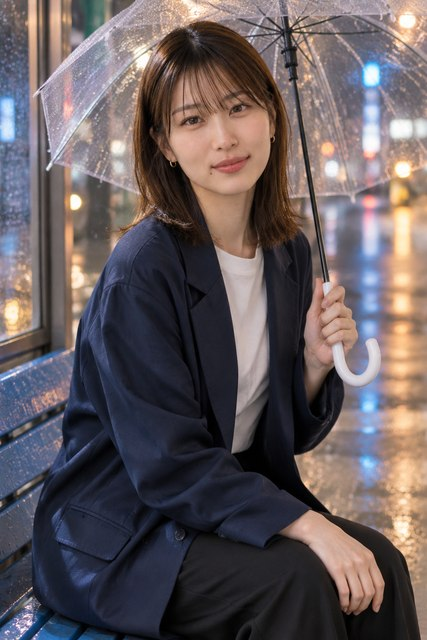
gpt-image-2.6-sunburst t05-r3-B / 74.0 秒 / 判据 5/6 / 1024 × 1536
指令遵循 3/4 画面质量 4/4 保留表现 4/4
逐项判据 通过 脸型五官与嘴角小痣符合白石凛参考眼形、鼻唇、脸型与嘴角小痣接近参考。 通过 深栗齐肩发、轻薄刘海与自然肤质保留齐肩栗发、薄刘海和轻微肤质纹理可辨。 通过 蓝西装+白T+黑长裤，替换旧衣深海军蓝宽西装、白色圆领T恤、黑长裤均在。 未通过 长椅坐姿、身体转左约45度、回看镜头蓝长椅坐姿、回看镜头成立，躯干和膝部斜朝画面右。 通过 左手透明伞、右手膝上且结构合理左手握透明伞，右手搭膝，手与伞结构大体自然。 通过 雨后公交站夜景、协调灯光，单人无文字单人、玻璃公交亭、湿地、冷暖反光均有，未见可读文字。 站亭与反光构成雨后夜景；透明伞和左右手分工可辨。身体仍向画面右转。
缺陷：身体转向画面右侧
T06 / 参考图编辑 / 1024x1536 白石凛：局部改包与区域保护
网站编辑接口没有传mask，本题测提示词约束的局部编辑；受保护区域像素差作为辅助，不等同感知质量。共3轮。
首轮都把包身改蓝；真正的差别在 RIN 的字形、扣带是否变色，以及邻近手有没有也被改动。
查看实际发送的完整提示词 对这张白石凛街拍原图做严格局部编辑，唯一允许修改的区域是她斜挎小包的包身皮面。把包身原来的浅棕色皮革改为深钴蓝色，仍然是真实皮革纹理；在包盖上左侧的空白皮革区域加入小巧、清晰的白色大写英文“RIN”，文字顺着包面透视，不盖住扣带。保持原来的浅棕色长肩带、包盖轮廓、扣带、金属件、包身大小、位置和阴影。
除指定包身皮面和RIN三个字母外，整张图其他区域都必须保持原样：人物脸部、嘴角小痣、发丝、表情、手、绿色风衣、腰带、白色裙子、鞋子、街道、花树、背景透视和光线均不要修改。保持原始1024x1536构图，不移动或缩放人物，不换背景，不美颜，不新增其他文字、水印或边框。 下载逐字文本 复制提示词 第 1 / 3 轮 gpt-image-2 t06-r1-A / 64.1 秒 / 判据 0/6 / 1024 × 1535
指令遵循 2/4 画面质量 3/4 保留表现 3/4
逐项判据 未通过 仅包身皮面变深钴蓝且保持皮革质感深钴蓝皮面成立；连接肩带的侧皮件也被改蓝。 未通过 RIN三字母准确、位于包盖空白处白色符号竖排且像几何笔画，不是可读RIN；也不在包盖左侧。 未通过 浅棕肩带、扣带、金属件及包形保留长肩带仍浅棕，侧皮件和包扣细节变化。 未通过 面部五官、表情、发丝、小痣保持痣和身份相近；眉眼、唇纹和刘海发丝有轻微重绘。 未通过 手、风衣、裙子、鞋子与姿态保持总体姿态保持；靠包的手与鞋面蝴蝶结局部细节有改变。 未通过 背景、光线、构图及主体位置保持主体位置近似，石墙细粒和远景纹理略变；输出高1535 px。 包身确实变蓝，但新增白字像竖排符号。整体构图接近原图，细看包扣和脸部等局部都有变化。
缺陷：包盖文字错误；侧连接片被改蓝；受保护细节有轻微重绘；输出高度少1 px
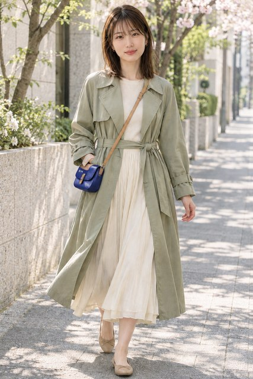
gpt-image-2.5-flare t06-r1-E / 65.7 秒 / 判据 2/6 / 1024 × 1536
指令遵循 3/4 画面质量 4/4 保留表现 3/4
逐项判据 通过 仅包身皮面变深钴蓝且保持皮革质感主体包面是深钴蓝皮革，棕肩带与扣带颜色仍在。 通过 RIN三字母准确、位于包盖空白处包盖左侧空白处可读RIN，未压住扣带。 未通过 浅棕肩带、扣带、金属件及包形保留长肩带与前扣带保留浅棕，包盖转角和小块金属扣形有变。 未通过 面部五官、表情、发丝、小痣保持脸型及痣接近，部分发丝、眼神反光和嘴角细节变化。 未通过 手、风衣、裙子、鞋子与姿态保持步态和轮廓维持；放下的手相近，鞋面和裙褶仍有细微变化。 未通过 背景、光线、构图及主体位置保持全尺寸和整体光位保持，部分墙面纹理和地面细影改变。 左侧可读的RIN和深钴蓝包面同时实现，前扣带仍为浅棕。大构图很接近，但并非逐区域原样保留。
缺陷：包扣五金细节改变；发丝、鞋面和墙面细纹有细微重绘
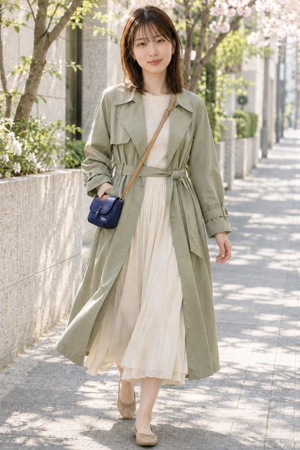
gpt-image-2.5-sunburst t06-r1-D / 37.2 秒 / 判据 0/6 / 1024 × 1536
指令遵循 2/4 画面质量 3/4 保留表现 3/4
逐项判据 未通过 仅包身皮面变深钴蓝且保持皮革质感蓝色皮革包面成功，前扣带也被改蓝。 未通过 RIN三字母准确、位于包盖空白处包身下半部只有几道弯曲白痕，包盖左上无可读RIN。 未通过 浅棕肩带、扣带、金属件及包形保留长带仍浅棕，前扣带与侧连接件变蓝，五金形态有差别。 未通过 面部五官、表情、发丝、小痣保持嘴角痣相近，唇形、眼周与额发细节有轻微漂移。 未通过 手、风衣、裙子、鞋子与姿态保持主体步态接近，裙摆和鞋面纹样不同，手部纹理也有轻微变化。 未通过 背景、光线、构图及主体位置保持1536 px高和主体位置保留，花树虚化、墙面和地面细纹变化。 画面尺度保持，主包改蓝。但原来的前扣带同时变蓝，包身下部只出现几道弯曲的白痕。
缺陷：缺少正确RIN；扣带和侧连接件改蓝；受保护区域有轻微重绘
gpt-image-2.6-flare t06-r1-C / 55.8 秒 / 判据 1/6 / 1024 × 1535
指令遵循 2/4 画面质量 3/4 保留表现 2/4
逐项判据 通过 仅包身皮面变深钴蓝且保持皮革质感深钴蓝包身，仍见皮革纹理；扣带和长肩带未跟着着色。 未通过 RIN三字母准确、位于包盖空白处左边类似RIN但细笔画歪扭，右边有多余白符号。 未通过 浅棕肩带、扣带、金属件及包形保留肩带和扣带仍棕，扣带末端和扣件结构细节有变化。 未通过 面部五官、表情、发丝、小痣保持痣与大致神情保留；眼神、眼周纹理和头发有轻微重绘。 未通过 手、风衣、裙子、鞋子与姿态保持原图包旁手指藏在包盖后，结果中至少两指明显移到包盖前；鞋和裙边也有细小变化。 未通过 背景、光线、构图及主体位置保持墙面和花景细部有变化；位置基本相同，输出高1535 px。 包旁手部漂移最明显：原图包盖挡住的手指出现在包盖上。左侧白字有变形，扣带右边还多出白色笔画。
缺陷：包旁手指位置明显变化；包盖文字变形并有额外白符号；输出高度少1 px
gpt-image-2.6-sunburst t06-r1-B / 80.2 秒 / 判据 0/6 / 1024 × 1535
指令遵循 2/4 画面质量 3/4 保留表现 3/4
逐项判据 未通过 仅包身皮面变深钴蓝且保持皮革质感包面是深蓝皮革，但原浅棕扣带也变蓝。 未通过 RIN三字母准确、位于包盖空白处左侧清楚写RIN，右侧还有近似AN的额外白字。 未通过 浅棕肩带、扣带、金属件及包形保留长肩带仍浅棕；侧连接片和前扣色泽形态变化。 未通过 面部五官、表情、发丝、小痣保持嘴角痣保留，眼形、脸部肤色与刘海线条有轻微变化。 未通过 手、风衣、裙子、鞋子与姿态保持风衣和步态整体接近；裙褶边缘、鞋面细节重画。 未通过 背景、光线、构图及主体位置保持石墙颗粒、花朵轮廓和细影有差异；输出高1535 px。 包盖左侧有正确RIN，同时在其右侧生成额外字形。原浅棕前扣被改成蓝，人物位置整体相近。
缺陷：额外白字；包扣重着色；受保护细节有轻微重绘；输出高度少1 px
第 2 / 3 轮 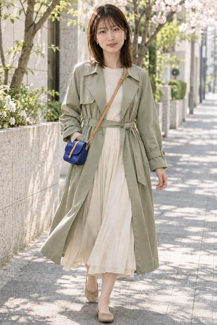
gpt-image-2 t06-r2-A / 30.5 秒 / 判据 4/6 / 1024 × 1535
指令遵循 2/4 画面质量 4/4 保留表现 3/4
逐项判据 未通过 仅包身皮面变深钴蓝且保持皮革质感包身呈钴蓝且有皮革纹理，但包盖上还增加一条贯穿的浅棕竖带。 通过 RIN三字母准确、位于包盖空白处包盖左上可读白色RIN，未压住竖带。 未通过 浅棕肩带、扣带、金属件及包形保留原先短扣带被延长到盖顶，侧连接件和肩带光色也发生变化。 通过 面部五官、表情、发丝、小痣保持五官、表情、发型与小痣可辨；耳饰另由小金圈变为圆点。 通过 手、风衣、裙子、鞋子与姿态保持双手姿势、风衣系带、裙与鞋保持原构图和形态。 通过 背景、光线、构图及主体位置保持树干、石栏、道路阴影和人物落点保持。 蓝皮面和左上RIN清楚。与原图对照，包盖新出现贯穿竖带，金圈耳饰被替换成浅色圆点。
缺陷：增加贯穿包盖的棕色竖带；非目标耳饰改变
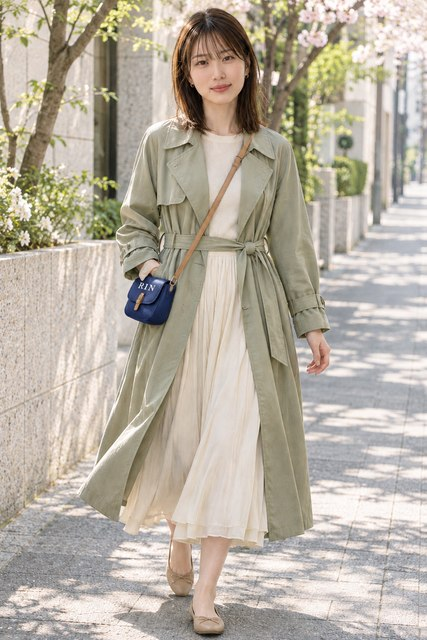
gpt-image-2.5-flare t06-r2-E / 29.7 秒 / 判据 6/6 / 1024 × 1536
指令遵循 4/4 画面质量 4/4 保留表现 4/4
逐项判据 通过 仅包身皮面变深钴蓝且保持皮革质感深蓝落在包盖和包身皮面，皮面细纹和局部高光仍可辨。 通过 RIN三字母准确、位于包盖空白处白色RIN字形完整，在包盖左上方空白、没有盖住扣带。 通过 浅棕肩带、扣带、金属件及包形保留长带和短扣带保持浅棕，金属环、包盖外轮廓和挂包位置基本一致。 通过 面部五官、表情、发丝、小痣保持嘴角小痣、刘海、耳圈和表情都可对上。 通过 手、风衣、裙子、鞋子与姿态保持手势、风衣、白裙、鞋和站位高度一致。 通过 背景、光线、构图及主体位置保持花树、栏墙、路面阴影与原取景一致，仅有轻微亮度差。 蓝色皮面与白色RIN分明；浅棕长带、扣带及其他场景保留较好。署名字号比部分样本大但没有遮挡扣带。
gpt-image-2.5-sunburst t06-r2-D / 41.0 秒 / 判据 4/6 / 1024 × 1535
指令遵循 3/4 画面质量 4/4 保留表现 3/4
逐项判据 未通过 仅包身皮面变深钴蓝且保持皮革质感包身有深蓝皮面光泽，但原浅棕短扣带也被改蓝。 通过 RIN三字母准确、位于包盖空白处斜置白色RIN三字母可逐一辨认，位于左侧空白。 未通过 浅棕肩带、扣带、金属件及包形保留浅棕长肩带和主要轮廓保留，但短扣带及侧挂片变为深蓝。 通过 面部五官、表情、发丝、小痣保持五官表情、刘海、小痣和耳环保持原样。 通过 手、风衣、裙子、鞋子与姿态保持双手、衣裙鞋和姿态未见明显改动。 通过 背景、光线、构图及主体位置保持背景树、石栏、光影及取景保持。 包盖左侧斜放的RIN清楚，深蓝皮面与原来的包形接近；短扣带和侧挂片也被染蓝。
缺陷：扣带与侧挂片被染蓝
gpt-image-2.6-flare t06-r2-C / 66.1 秒 / 判据 3/6 / 1024 × 1535
指令遵循 2/4 画面质量 3/4 保留表现 3/4
逐项判据 未通过 仅包身皮面变深钴蓝且保持皮革质感蓝皮面仍有反光，但另有新棕条和变蓝的侧连接部件。 未通过 RIN三字母准确、位于包盖空白处左上字形断笔，右侧另有一小组白色字符状笔画。 未通过 浅棕肩带、扣带、金属件及包形保留短扣带上端被延长为贯穿包盖的竖带，侧连接处颜色也改变。 通过 面部五官、表情、发丝、小痣保持眼鼻嘴形、刘海及嘴角小痣与原图接近。 通过 手、风衣、裙子、鞋子与姿态保持手、衣摆、白裙、鞋和步态位置与原图对应。 通过 背景、光线、构图及主体位置保持石栏、花树和铺装阴影位置一致。 蓝包能辨，包盖左字形失真、右侧有额外小白笔画，棕扣带被画长到包盖上缘。
缺陷：包盖字形错误并有额外笔画；扣带结构改变
gpt-image-2.6-sunburst t06-r2-B / 113.2 秒 / 判据 4/6 / 1024 × 1535
指令遵循 3/4 画面质量 4/4 保留表现 3/4
逐项判据 未通过 仅包身皮面变深钴蓝且保持皮革质感包身为有反光的深蓝皮革，但长肩带和扣带也明显加深偏红。 通过 RIN三字母准确、位于包盖空白处左上白色RIN三字母清楚，未覆盖扣带。 未通过 浅棕肩带、扣带、金属件及包形保留包形与扣带位置接近原图，但肩带由浅棕变为偏红棕，扣带光色也变深。 通过 面部五官、表情、发丝、小痣保持表情、刘海、嘴角小痣及耳圈保持。 通过 手、风衣、裙子、鞋子与姿态保持手势、腰带、绿色外衣、白裙和鞋未见可辨结构改变。 通过 背景、光线、构图及主体位置保持街道透视、人物位置和日光阴影一致。 小号RIN落在包盖左上，包身为偏深藏蓝。长肩带和扣带比原图明显偏红棕。
缺陷：肩带和扣带色偏
第 3 / 3 轮 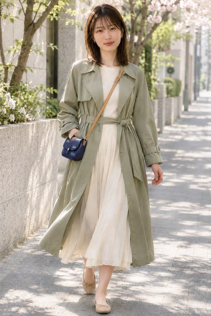
gpt-image-2 t06-r3-A / 28.2 秒 / 判据 1/6 / 1024 × 1536
指令遵循 2/4 画面质量 3/4 保留表现 2/4
逐项判据 未通过 仅包身皮面变深钴蓝且保持皮革质感包身深蓝且仍有光泽，但短扣带也改成蓝色。 未通过 RIN三字母准确、位于包盖空白处包盖两处分开的白色笔画无法组成唯一清楚的RIN。 未通过 浅棕肩带、扣带、金属件及包形保留扣带改蓝，金色扣件的显露面积和侧挂件形状变化。 通过 面部五官、表情、发丝、小痣保持原来的表情、刘海和小痣仍可辨，肤色和唇色比参考偏暖。 未通过 手、风衣、裙子、鞋子与姿态保持服装轮廓与姿态保持，但垂下的手明显更深、更红。 未通过 背景、光线、构图及主体位置保持街道和树位置未移动，但下半路面较暗，原光色未完全保留。 改成了深蓝包，但包盖有两组失真的白色小字符，扣带也变蓝。与参考并排时手部和下半路面更暗。
缺陷：字样断裂且有额外字符；扣带变蓝；手与路面光色改变
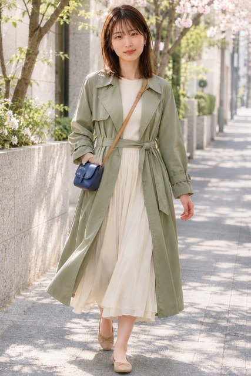
gpt-image-2.5-flare t06-r3-E / 57.4 秒 / 判据 0/6 / 1024 × 1535
指令遵循 2/4 画面质量 3/4 保留表现 2/4
逐项判据 未通过 仅包身皮面变深钴蓝且保持皮革质感包身变蓝，但短扣带和侧片也变成偏蓝色。 未通过 RIN三字母准确、位于包盖空白处左上有近似RIN的白字，下面另有明确的短白字，非唯一三个字母。 未通过 浅棕肩带、扣带、金属件及包形保留棕色短扣带被改蓝，侧挂片和长带光色变化。 未通过 面部五官、表情、发丝、小痣保持五官、痣和发型仍相近，但面部和唇色明显更暖更红。 未通过 手、风衣、裙子、鞋子与姿态保持姿势和服饰轮廓保留，垂下的手较原图偏红，未完整保护。 未通过 背景、光线、构图及主体位置保持街景构图基本相同，但背景光色与路面阴影的明暗发生变化。 包盖出现两组白字且扣带染蓝。脸、手和周围光色明显较原图偏暖，背景位置仍大体一致。
缺陷：包盖出现额外白字；扣带变蓝；非目标脸、手及场景色调改变
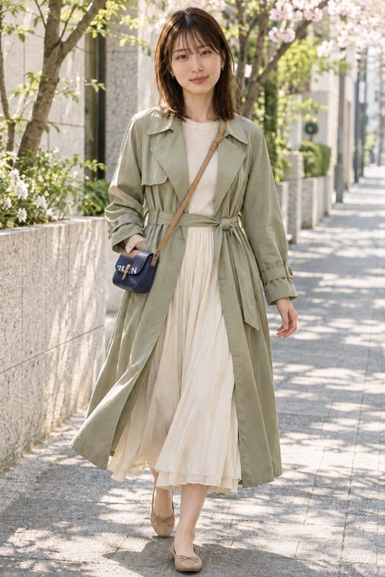
gpt-image-2.5-sunburst t06-r3-D / 38.8 秒 / 判据 5/6 / 1024 × 1535
指令遵循 2/4 画面质量 3/4 保留表现 4/4
逐项判据 通过 仅包身皮面变深钴蓝且保持皮革质感包身蓝色皮革可辨，有贴合原包曲面的光泽；长带和扣带仍为棕色。 未通过 RIN三字母准确、位于包盖空白处大号白字横跨扣带周围，被扣带分断，不是完整落在左上空白的RIN。 通过 浅棕肩带、扣带、金属件及包形保留棕色长带与扣带、金属件和袋形保持得较接近参考。 通过 面部五官、表情、发丝、小痣保持脸部构图、眼鼻嘴、刘海、表情及小痣近似原图。 通过 手、风衣、裙子、鞋子与姿态保持手、衣摆、裙、鞋和原有姿势都能一一对应。 通过 背景、光线、构图及主体位置保持街景、路面影子和人物位置未见显著变动。 蓝色皮面与原有棕色五金带清楚，人物和街景与参考接近。白字太靠下，跨过扣带并断开。
缺陷：字样过大且跨越扣带
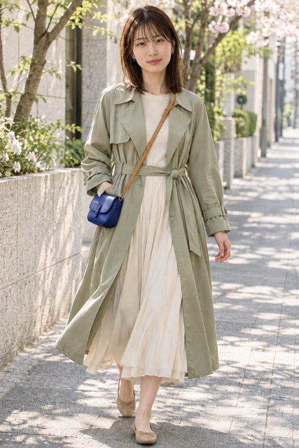
gpt-image-2.6-flare t06-r3-C / 58.5 秒 / 判据 3/5 / 1024 × 1536
指令遵循 2/4 画面质量 3/4 保留表现 3/4
逐项判据 未通过 仅包身皮面变深钴蓝且保持皮革质感钴蓝皮面有亮面反光，但短扣带也全部染蓝。 不确定 RIN三字母准确、位于包盖空白处左上白色字形小且断裂；uncertain，无法逐字确认RIN。 未通过 浅棕肩带、扣带、金属件及包形保留短扣带从棕变蓝，侧挂片失去原棕色，肩带颜色偏橙。 通过 面部五官、表情、发丝、小痣保持小痣、五官轮廓、表情和发型保留。 通过 手、风衣、裙子、鞋子与姿态保持手的位置、风衣、裙和鞋未见明确变化。 通过 背景、光线、构图及主体位置保持树、石栏、路面阴影与原构图一致。 包身和扣带一起变蓝，左上仍有一点白字，但字形不足以确认RIN。人物和街景保持原来的摆位。
缺陷：扣带变蓝；字形小且断裂，无法确认
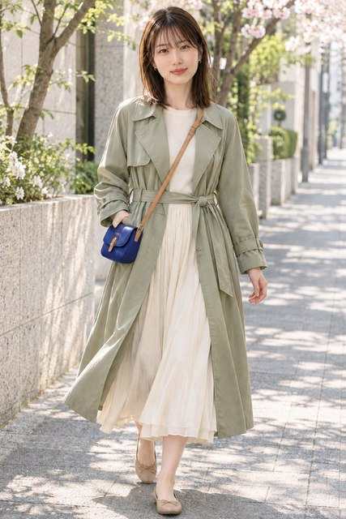
gpt-image-2.6-sunburst t06-r3-B / 70.4 秒 / 判据 2/5 / 1024 × 1536
指令遵循 2/4 画面质量 3/4 保留表现 3/4
逐项判据 未通过 仅包身皮面变深钴蓝且保持皮革质感包身确为钴蓝，长肩带也比参考更亮更橙。 不确定 RIN三字母准确、位于包盖空白处小字笔画黏连且微弱；uncertain，无法逐字确认是RIN。 未通过 浅棕肩带、扣带、金属件及包形保留短扣带保留浅棕，但更圆更厚，侧挂片轮廓与长带光色改变。 未通过 面部五官、表情、发丝、小痣保持小痣、五官位置和发型保留，但面部整体显著提亮。 通过 手、风衣、裙子、鞋子与姿态保持衣裙鞋、手形与步态保持同一几何位置。 通过 背景、光线、构图及主体位置保持街道构图、树栏位置及投影形状保留。 蓝包和浅棕扣带清楚，但小字无法确认。面部变亮，肩带与侧挂片也有可见变化。
缺陷：字样模糊，无法确认RIN；非目标面部提亮；肩带和侧挂片偏移
T07 / 参考图编辑 / 1536x1024 白石凛：竖图扩成横图
透明边缘画布+提示词的images/edits测试，没有专用outpaint或mask参数。中央源图由1024x1536缩放到683x1024，未作生成式修改。
五张均补满横图且衔接自然；没有一张把中央人物和原有环境完全按题意保留。
查看实际发送的完整提示词 这是一个1536x1024的横向透明画布，中间已有一张完整的白石凛街拍照片，左右透明区域需要补画。请只填充左右透明区域，将原图的街道自然延伸为一张连续完整的横版照片。中间已有照片的区域必须保持不动、不重新绘制、不裁切、不缩放；人物的位置、大小、脸、发丝、服装、手、包、腿和鞋必须全部保留。向左自然延伸石墙、绿植和花树；向右自然延伸人行道、建筑和街树，保持原来的透视消失方向、白天光线、树影和地面纹理。新旧区域衔接不能出现明显竖缝、模糊带、重复克隆的花或树、倾斜错位的建筑。只保留原来的白石凛一个人，不新增人物、文字、边框或水印，左右边缘全部填满，不留下透明或黑色空白。输出1536x1024横图。 下载逐字文本 复制提示词 第 1 / 1 轮 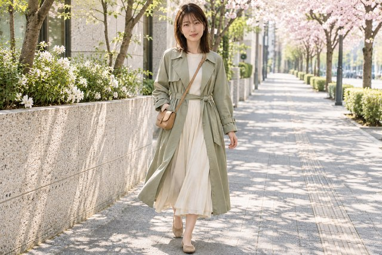
gpt-image-2 t07-r1-A / 35.3 秒 / 判据 5/6 / 1536 × 1024
指令遵循 3/4 画面质量 4/4 保留表现 3/4
逐项判据 通过 1536x1024且两侧填满无空白1536×1024，左右扩展到边，没有透明或黑色空白。 通过 原人物位置、尺度、头脚完整且只有一人人物原来的位置、大小大致保持，单人头脚完整。 未通过 中央原图主体与已有环境保持中心大体接近参考；面部纹理、指尖、鞋面和局部地影未原样保留。 通过 左右衔接无明显竖缝或模糊带原图边界附近未见明显竖缝或模糊带。 通过 建筑、石墙、地面透视连续石墙横向接缝、右侧步道与盲道线朝相容的远端延伸。 通过 光影连续、绿植纹理自然无明显重复树影方向相容，新增花叶未见明显重复图块。 石墙在左自然延伸，右侧新增树列及盲道。中央位置很接近原图，但鞋面、手和局部地面仍可见重绘。
缺陷：中央保护区部分细节有重绘
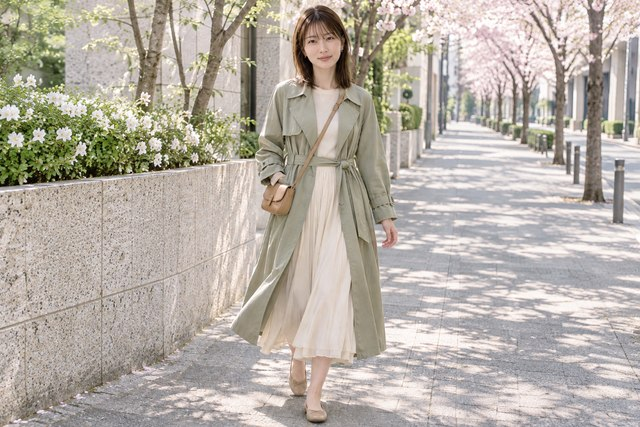
gpt-image-2.5-flare t07-r1-E / 31.3 秒 / 判据 5/6 / 1536 × 1024
指令遵循 2/4 画面质量 4/4 保留表现 2/4
逐项判据 通过 1536x1024且两侧填满无空白1536×1024，左右扩展到边，没有透明或黑色空白。 通过 原人物位置、尺度、头脚完整且只有一人人物原来的位置、大小大致保持，单人头脚完整。 未通过 中央原图主体与已有环境保持面部、鞋面与裙摆有轻微变化，中央人行道树影的宽度和轮廓明显改变。 通过 左右衔接无明显竖缝或模糊带原图边界附近未见明显竖缝或模糊带。 通过 建筑、石墙、地面透视连续左侧石墙、右侧人行道及路桩的消失方向协调。 通过 光影连续、绿植纹理自然无明显重复花树与落花自然，日光方向和影子没有明显断裂。 左边白花和右侧粉色行道树自然补齐了画面，未见直缝。中央的树影图案已明显更换，鞋与面部也略有差别。
缺陷：中央保护区的树影和局部铺装重绘
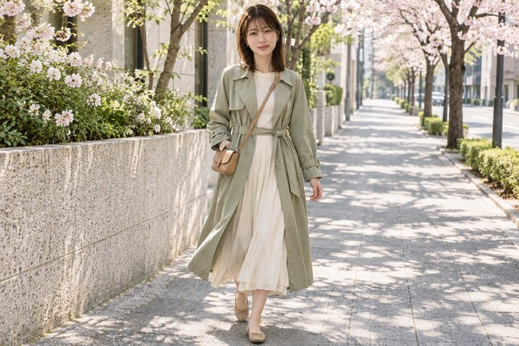
gpt-image-2.5-sunburst t07-r1-D / 56.7 秒 / 判据 5/6 / 1536 × 1024
指令遵循 3/4 画面质量 4/4 保留表现 3/4
逐项判据 通过 1536x1024且两侧填满无空白1536×1024，左右扩展到边，没有透明或黑色空白。 通过 原人物位置、尺度、头脚完整且只有一人人物原来的位置、大小大致保持，单人头脚完整。 未通过 中央原图主体与已有环境保持中央脸部、手、裙褶、鞋与局部背景纹理有差异，原构图和大形接近。 通过 左右衔接无明显竖缝或模糊带原图边界附近未见明显竖缝或模糊带。 通过 建筑、石墙、地面透视连续石墙上沿接到原景，右侧车道与人行道走向合理。 通过 光影连续、绿植纹理自然无明显重复左前花丛和右侧行道树在同样日光下，未见克隆纹理。 左右延伸出花墙和路侧树列，人物尺度接近参考。中央脸、手及局部铺装细节发生细小变化。
缺陷：中央保护区部分细节有重绘
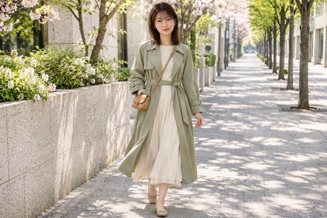
gpt-image-2.6-flare t07-r1-C / 108.4 秒 / 判据 5/6 / 1536 × 1024
指令遵循 2/4 画面质量 4/4 保留表现 2/4
逐项判据 通过 1536x1024且两侧填满无空白1536×1024，左右扩展到边，没有透明或黑色空白。 通过 原人物位置、尺度、头脚完整且只有一人人物原来的位置、大小大致保持，单人头脚完整。 未通过 中央原图主体与已有环境保持面部及衣物小细节重绘；中央原步道的长段明暗条纹和铺砖线明显改变。 通过 左右衔接无明显竖缝或模糊带原图边界附近未见明显竖缝或模糊带。 通过 建筑、石墙、地面透视连续两侧石墙、建筑和树列与步道透视大体一致。 通过 光影连续、绿植纹理自然无明显重复光向合理，新增右侧绿树有可辨的个体差异。 左墙与右侧新添的建筑、绿树构成完整街景。人物轮廓仍接近原尺寸，中央右侧大段路面和树影有明显重绘。
缺陷：中央保护区的路面纹理与阴影改动
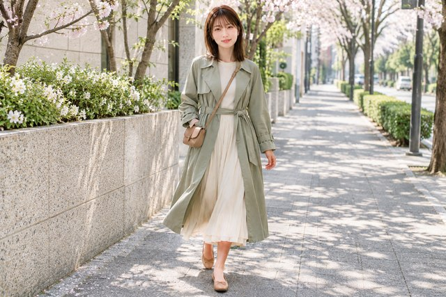
gpt-image-2.6-sunburst t07-r1-B / 43.4 秒 / 判据 4/6 / 1536 × 1024
指令遵循 2/4 画面质量 4/4 保留表现 2/4
逐项判据 通过 1536x1024且两侧填满无空白1536×1024，左右扩展到边，没有透明或黑色空白。 未通过 原人物位置、尺度、头脚完整且只有一人单人头脚完整；肩、裙边和鞋底向上移动，人物略缩小。 未通过 中央原图主体与已有环境保持肤色偏暖，裙摆缩短、手和鞋重新绘制；中央铺装与光影亦变。 通过 左右衔接无明显竖缝或模糊带原图边界附近未见明显竖缝或模糊带。 通过 建筑、石墙、地面透视连续石墙和步道向同一消失区延伸，边缘整体连贯。 通过 光影连续、绿植纹理自然无明显重复日光和树影相容，新增花树未见明显克隆。 横图两侧完整、无显眼拼缝。人物整体变小，鞋底抬高，露出的腿及垂手肤色更暖，中央人物未原样保留。
缺陷：中央人物位置与尺度改变；肤色、服装和地面重绘
T08 / 参考图编辑 / 1024x1536 白石凛：人物、服装、场景三图融合
服装参考是网站现有256x384素材；场景为旧网站咖啡图无人物区域裁切220x650。低分辨率参考限制亦纳入说明。
首轮五张的六项判据均通过。低分辨率输入可用作本次观察，细小服装纹理不能作为跨样本保证。
输入参考图 图 1 · rin-face.png 图 2 · outfit.png 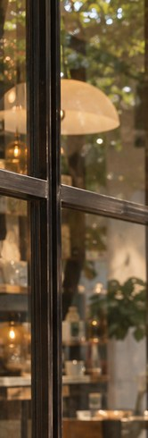
图 3 · cafe-background.png 查看实际发送的完整提示词 请严格按三张参考图各自的职责生成一张写实时尚全身照片。图1只负责人物身份：必须是同一位25岁成年虚拟女性白石凛，保持脸型、五官、嘴角小痣、深栗色齐肩直发和轻薄刘海，保留真实皮肤质感。图2只负责整套穿搭：米白色V领长袖裹身上衣，侧腰系带；深棕色百褶短裙；白色袜口；深棕色及膝长靴；深棕色肩包；简洁金色项链与耳饰。按图2还原颜色、层次和主要结构，不要换成图1的针织开衫。图3只负责环境：黑色金属窗框、大块玻璃、温暖吊灯、玻璃反光和绿植组成的咖啡店窗外。不要把三张参考图拼贴到画面里。
白石凛自然站在这家咖啡店窗外，一只手轻扶肩包带，另一只手放松垂下。镜头从头顶拍到两只靴子底部，人物全身居中完整，正常身体比例。咖啡店暖光与自然环境光协调，人物、衣服和环境融合成同一张可信照片。画面里只有白石凛一人，没有额外人物，没有可读品牌文字、水印或拼图。竖版2:3。 下载逐字文本 复制提示词 第 1 / 1 轮 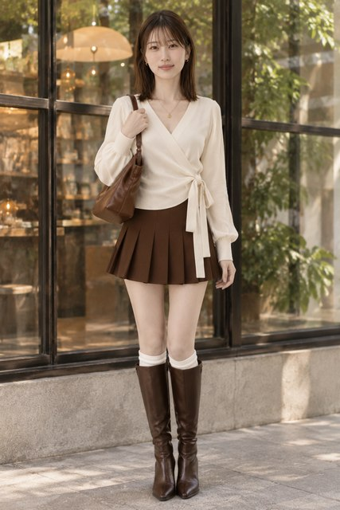
gpt-image-2 t08-r1-A / 54.2 秒 / 判据 6/6 / 1024 × 1536
指令遵循 4/4 画面质量 4/4 保留表现 4/4
逐项判据 通过 人物身份、刘海、嘴角小痣来自白石凛参考的眼、鼻、唇、嘴角下小痣和薄刘海清楚。 通过 米白V领裹身长袖上衣、侧腰系带米白V领裹身长袖与侧腰长系带符合穿搭参考。 通过 深棕百褶短裙、白袜口、深棕长靴深棕百褶裙、双侧白袜口和深棕及膝靴均可辨。 通过 棕肩包、金色项链耳饰及扶包动作棕色肩包、金色小圆坠与金耳圈；右手扶带，左手放松垂下。 通过 黑框玻璃、暖吊灯、反光绿植咖啡店黑金属框大玻璃、暖吊灯、绿叶与玻璃反光同时可见。 通过 全身含靴底完整、单人、统一光影无拼贴单人居中，头顶和双靴底在画框内；日光与暖窗光衔接。 人物、服饰和店窗构成一张连贯的全身照片，双靴贴地且完整。左侧暖灯和右侧玻璃绿植反光都保留了参考线索。
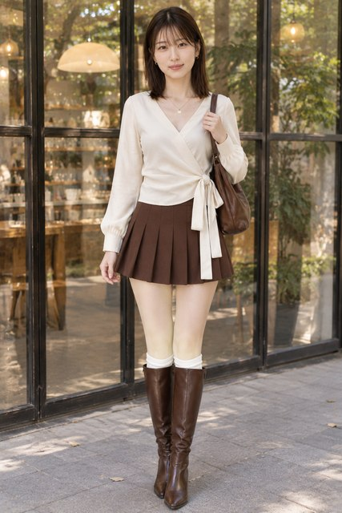
gpt-image-2.5-flare t08-r1-E / 47.4 秒 / 判据 6/6 / 1024 × 1536
指令遵循 4/4 画面质量 4/4 保留表现 4/4
逐项判据 通过 人物身份、刘海、嘴角小痣来自白石凛脸型、眼鼻、嘴角小痣与参考相近；薄刘海和深栗齐肩发可见。 通过 米白V领裹身长袖上衣、侧腰系带米白V领裹身长袖与侧腰长系带符合穿搭参考。 通过 深棕百褶短裙、白袜口、深棕长靴深棕百褶裙、双侧白袜口和深棕及膝靴均可辨。 通过 棕肩包、金色项链耳饰及扶包动作棕色肩包、金耳圈与金项链均可见，左手扶带、右手垂放。 通过 黑框玻璃、暖吊灯、反光绿植咖啡店黑金属框大玻璃、暖吊灯、绿叶与玻璃反光同时可见。 通过 全身含靴底完整、单人、统一光影无拼贴人物居中、只有一人，头顶和两只棕靴脚尖底线都在画面内；整体光线融合。 黑框玻璃与灯光、叶面倒影都有对应。人物双靴前后相叠但都在画面内，服饰和配饰齐全。
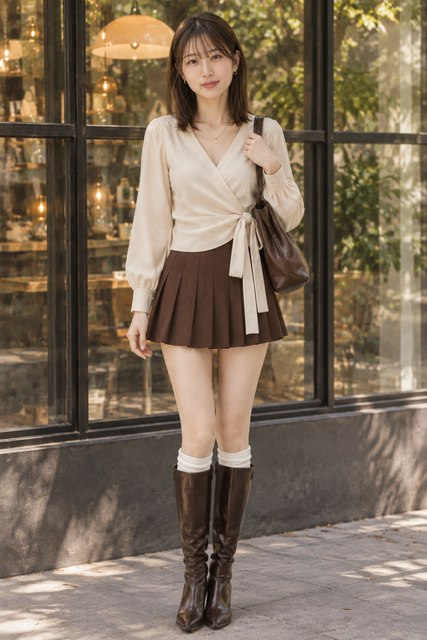
gpt-image-2.5-sunburst t08-r1-D / 43.2 秒 / 判据 6/6 / 1024 × 1536
指令遵循 4/4 画面质量 4/4 保留表现 4/4
逐项判据 通过 人物身份、刘海、嘴角小痣来自白石凛眼鼻唇和嘴角痣位置接近参考；薄刘海与栗色齐肩发保留。 通过 米白V领裹身长袖上衣、侧腰系带米白V领长袖和侧腰系带都在，上衣表面比参考略平滑。 通过 深棕百褶短裙、白袜口、深棕长靴深棕百褶裙、双侧白袜口和深棕及膝靴均可辨。 通过 棕肩包、金色项链耳饰及扶包动作棕肩包、金项链、耳饰齐全，左手扶带、右手下垂。 通过 黑框玻璃、暖吊灯、反光绿植咖啡店黑金属框大玻璃、暖吊灯、绿叶与玻璃反光同时可见。 通过 全身含靴底完整、单人、统一光影无拼贴单人全身与靴底完整，窗下墙体和人物周围有连续自然树影。 窗边站姿和参考服装各层清楚。上衣质地比服装图平滑，V领、长袖和侧系带的结构仍对应。
gpt-image-2.6-flare t08-r1-C / 54.5 秒 / 判据 6/6 / 1024 × 1536
指令遵循 4/4 画面质量 4/4 保留表现 4/4
逐项判据 通过 人物身份、刘海、嘴角小痣来自白石凛眼形、唇形、嘴角痣与参考接近，深栗薄刘海清楚。 通过 米白V领裹身长袖上衣、侧腰系带米白V领裹身长袖与侧腰长系带符合穿搭参考。 通过 深棕百褶短裙、白袜口、深棕长靴深棕百褶裙、双侧白袜口和深棕及膝靴均可辨。 通过 棕肩包、金色项链耳饰及扶包动作左手扶棕包带，右手下垂；有金色吊坠与耳饰。 通过 黑框玻璃、暖吊灯、反光绿植咖啡店黑金属框大玻璃、暖吊灯、绿叶与玻璃反光同时可见。 通过 全身含靴底完整、单人、统一光影无拼贴单人全身，靴子前后略叠但两端未出框，窗外日光与吊灯暖光自然。 人物一脚在前，两只靴底都在画面内；服装各件齐全。多盏暖灯和窗面绿叶反光均可辨。
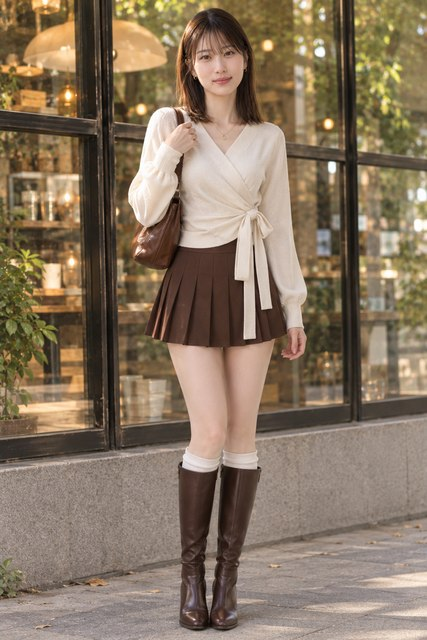
gpt-image-2.6-sunburst t08-r1-B / 34.0 秒 / 判据 6/6 / 1024 × 1536
指令遵循 4/4 画面质量 4/4 保留表现 4/4
逐项判据 通过 人物身份、刘海、嘴角小痣来自白石凛嘴角下小痣位置对应，脸部骨相、栗色齐肩发和薄刘海与参考近。 通过 米白V领裹身长袖上衣、侧腰系带米白V领裹身长袖与侧腰长系带符合穿搭参考。 通过 深棕百褶短裙、白袜口、深棕长靴深棕百褶裙、双侧白袜口和深棕及膝靴均可辨。 通过 棕肩包、金色项链耳饰及扶包动作右手扶棕包肩带，左手垂放；金色项链与耳圈可见。 通过 黑框玻璃、暖吊灯、反光绿植咖啡店黑金属框大玻璃、暖吊灯、绿叶与玻璃反光同时可见。 通过 全身含靴底完整、单人、统一光影无拼贴人物居中，双靴与头顶完整，衣物和窗面日光方向协调。 V领针织裹身和裙褶的纹理清楚，白袜口与两只棕靴底均可见。人物肩头的亮面与店窗和地面光向协调。